Questo libro spiega il backgammon a chi non lo conosce affatto, da zero e passo dopo passo. È diviso in sei capitoli: introduzione al gioco, tavoliere e disposizione iniziale, regole, giocare meglio, usare Pedine e Dadi e consultazione. Se leggi i capitoli in ordine, alla fine saprai giocare la tua prima partita rispettando le regole; chi conosce già il backgammon può passare direttamente al capitolo 3 o 4.
Come leggere le immagini? Le immagini sono tratte da Pedine e Dadi e mostrano il tavoliere del gioco. Tu sei in basso: le pedine color crema sono tue, quelle marrone scuro del tuo avversario. La tua tavola interna è in basso a destra e le pedine portate fuori finiscono nel vassoio verde alla destra del tavoliere. I numeri delle punte, le frecce e le cornici colorate sono stati aggiunti alle immagini in seguito: sul tavoliere dell’app i numeri non ci sono. I numeri sono sempre scritti dal tuo punto di vista: 1 è la punta più a destra della tua tavola interna, 24 la punta più a destra della tavola interna dell’avversario. Le frecce mostrano dove va la pedina e il numerino sulla freccia indica con quale dado è stata giocata; i dadi sul tavoliere mostrano i numeri usciti in quel turno.
Due set di regole. Pedine e Dadi supporta sia le regole internazionali (con il cubo del raddoppio) sia le regole più diffuse del tavla turco. Le regole di base sono le stesse in entrambi; dove differiscono, lo si segnala nelle sezioni relative, e il capitolo 2 contiene anche una tabella di confronto (Tabella 2.1).
Capitolo 1
Per cominciare
Questo capitolo è per chi non conosce affatto il backgammon: una guida rapida in sette regole, una breve storia del gioco e dei suoi parenti, lo scopo del gioco e il materiale necessario.
1.1 Guida rapida
Se vuoi capire subito il gioco senza entrare nei dettagli, ti bastano queste sette regole. Ognuna è spiegata per esteso nei capitoli successivi.
Scopo: porta le tue 15 pedine intorno al tavoliere fino alla tua tavola interna, in basso a destra, poi toglile dal tavoliere. Vince chi finisce per primo.
Turno: a ogni turno lanci due dadi. Ogni dado fa avanzare una pedina di altrettante punte. Se esce lo stesso numero su entrambi (un doppio), fai quattro mosse.
Direzione: le tue pedine vanno sempre verso le punte con il numero più basso, in direzione della tua tavola interna. Non si torna mai indietro.
Dove fermarsi: su una punta vuota, sulle tue pedine o su una pedina avversaria isolata. Non puoi fermarti su una punta occupata da due o più pedine avversarie (un punto).
Colpire: se arrivi su una pedina avversaria isolata la colpisci, e quella pedina va sulla barra, al centro. Se invece viene colpita una tua pedina, al tuo turno la prima cosa da fare è farla rientrare dalla tavola interna dell’avversario; finché hai una pedina sulla barra, non puoi muovere altre pedine.
Obbligo: devi giocare i dadi che puoi giocare; se non ci stanno tutti e due, giochi il più alto.
Uscita: quando tutte le tue pedine sono nella tua tavola interna, cominci a portarle fuori dalla punta che corrisponde al numero del dado. Se finisci prima che l’avversario abbia portato fuori anche una sola pedina, vinci un gammon e prendi 2 punti.
1.2 Breve storia del backgammon
Il backgammon fa parte di una delle più antiche famiglie di giochi ancora praticate. I giochi in cui, con dadi e pedine, si corre fino alla fine di un percorso sono noti da circa 5.000 anni; le regole di oggi, invece, si sono assestate lentamente nel corso dei secoli, in un viaggio che va dalla Mesopotamia a Roma, dalla Persia ai caffè ottomani.
Le prime tracce. Le tracce dei giochi di corsa guidati dai dadi risalgono ai più antichi insediamenti conosciuti. Negli scavi di Shahr-i Sokhta, nell’Iran sudorientale, è venuto alla luce un set da gioco di circa cinquemila anni fa: un tavoliere con un percorso disegnato a spire di serpente, un paio di dadi e delle pedine scolpite in agata e turchese, sessanta secondo i resoconti. Come si giocasse e che rapporto abbia con il backgammon resta controverso. In Mesopotamia, nelle tombe reali della città di Ur, è stato trovato anche un tavoliere per un gioco di corsa, più o meno della stessa epoca; poiché le sue regole sono state in parte ricostruite grazie a una tavoletta cuneiforme, il Gioco reale di Ur è considerato il più antico gioco da tavolo di cui si conoscano le regole. Questi giochi sono lontani parenti del backgammon, non suoi antenati diretti.
Il nard persiano. L’antenato più prossimo conosciuto del backgammon di oggi è il nard (o nerd), giocato nella Persia sasanide; la sua nascita si colloca tra il III e il VI secolo d.C. Secondo l’etimologia più accreditata, persino il nome rende omaggio a un sovrano: si ritiene che nard sia la forma abbreviata di nēw-ardaxšīr, «Ardashir il valoroso», e che alluda al fondatore della dinastia, Ardashir I. La storia più amata, però, ne attribuisce l’invenzione a Bozorgmehr, il saggio visir di Cosroe I: quando dall’India arrivarono gli scacchi, il visir ne svelò il segreto e in risposta ideò il nard e lo mandò in India, dove i saggi indiani non riuscirono a decifrarlo. Il trattato in medio persiano da cui proviene questo racconto descrive il gioco come un modello dell’universo: il tavoliere è la terra, le trenta pedine sono i giorni e le notti del mese, i due dadi il giorno e la notte, e le facce opposte dei dadi, la cui somma fa sette, sono i pianeti. Anche lo Shahnameh di Firdusi riprende la stessa storia.
La tabula a Roma e a Bisanzio. I Romani avevano un gioco di corsa chiamato «gioco delle dodici linee» (ludus duodecim scriptorum), che si giocava su tre file di caselle. Col tempo la fila centrale scomparve; rimase un tavoliere con 12 caselle per lato, 24 in tutto, e il gioco prese il nome di tabula. Ogni giocatore aveva 15 pedine. Si dice che l’imperatore Claudio ne fosse appassionato e che vi avesse persino dedicato un libro. Oggi conosciamo le regole del gioco in gran parte grazie a una poesia che racconta una mano che l’imperatore bizantino Zenone (476–491) perse per colpa dei dadi. Le differenze principali tra la tabula e il backgammon di oggi sono che si giocava con tre dadi e che non c’era una barra su cui le pedine colpite dovessero aspettare. Anche la parola turca «tavla» ha questa origine: il latino tabula (tavola, tavolo) è diventato «tavli» nel greco bizantino e da lì è passato al turco.
Il nard nel mondo islamico. Partito dalla Persia, il nard si diffuse nel mondo arabo con lo stesso nome e per secoli fu il gioco dei caffè e dei caravanserragli. Anche in turco ottomano il backgammon si chiamava «nerd». La traccia più viva di questo passato comune sta nei nomi dei dadi: nomi misti persiano-turchi come «düşeş», «şeşbeş» e «hepyek» si pronunciano allo stesso modo dai Balcani al mondo arabo; in Libano e in Israele «şeş beş» è addirittura il nome del gioco stesso. Dal XIX secolo i set da backgammon di Damasco intarsiati di madreperla sono celebri in tutta la regione.
L’Europa e il «backgammon». I giochi della famiglia del backgammon si giocarono in tutta Europa durante il Medioevo; gli inglesi li chiamavano collettivamente «tables». Il gioco fu a volte proibito, a volte amato nelle corti; il libro dei giochi di Alfonso X di Castiglia, del 1283, registra le regole di diverse varianti, con le relative illustrazioni. Il nome «backgammon» comparve in Inghilterra verso la metà del XVII secolo; la prima attestazione nota è una lettera del 1647. Secondo i manuali di regole dell’epoca, dettagli come l’attesa della pedina colpita sulla barra centrale e il punteggio odierno di gammon e backgammon erano ormai consolidati al più tardi nel 1850.
Gli Ottomani e il caffè. Il tavla entrò nella vita quotidiana turca insieme ai caffè. I primi caffè di Istanbul aprirono negli anni 1550 a Tahtakale e in breve si diffusero in ogni quartiere. Lo storico dell’epoca Peçevi racconta che, fra quanti si riunivano in questi nuovi locali, alcuni leggevano libri e altri giocavano a tavla o a scacchi; Evliya Çelebi, invece, conta centinaia di caffè nell’Istanbul del XVII secolo. Nel vasto territorio dominato dagli Ottomani, il tavla divenne parte inseparabile di questa cultura del caffè e rimase al suo posto anche dopo il ritiro dell’impero. Se oggi in paesi come Turchia, Grecia, Cipro, Egitto e Libano il backgammon è considerato quasi un gioco nazionale, lo si deve, oltre che alle tradizioni ludiche bizantine, persiane e arabe, anche a questa eredità dei caffè.
L’età moderna. Il cubo del raddoppio, nato negli anni 1920 nei circoli di gioco di New York, portò nel gioco il calcolo delle probabilità e la gestione del rischio e lo elevò a un livello del tutto nuovo. Negli anni 1960 il backgammon tornò di moda; il primo campionato del mondo si tenne a Las Vegas nel 1967, e dal 1979 il campionato si disputa a Monte Carlo. Anche i computer entrarono presto in questa storia: nel 1979 un programma chiamato BKG 9.8 sconfisse in un match l’allora campione del mondo Luigi Villa; persino l’autore del programma ammise che i dadi avevano favorito la macchina. Negli anni 1990 TD-Gammon, che imparava giocando contro sé stesso, raggiunse il livello dei maestri; oggi ogni fase del gioco, dalle mosse d’apertura alle decisioni sul cubo, è stata riscritta alla luce delle analisi di questi programmi. La Federazione mondiale di backgammon, fondata nel 2018, è tra le principali organizzazioni che cercano di armonizzare le regole dei tornei internazionali; anche in Turchia ci sono associazioni che organizzano tornei con il cubo del raddoppio. Oggi il backgammon raggiunge milioni di giocatori grazie alle piattaforme online e alle app per dispositivi mobili.
Tabella 1.1 Cronologia del backgammon
Periodo
Evento
~3000 a.C.
Tavoliere con due dadi e 60 pedine a Shahr-i Sokhta
~2600 a.C.
Gioco reale di Ur, Mesopotamia
III–VI secolo d.C.
Il nard nella Persia sasanide; la leggenda di Bozorgmehr
476–491 d.C.
Regno di Zenone, la tabula a Bisanzio
1283
Varianti del backgammon nel libro dei giochi di Alfonso X
Anni 1550
Primi caffè a Istanbul; il tavla diventa il gioco dei caffè
1647
Primo uso noto del nome «backgammon»
Entro il 1850
Regola della barra e punteggio odierno ormai consolidati
Anni 1920
Il cubo del raddoppio a New York
1967
Primo campionato del mondo, Las Vegas
1979
BKG 9.8 batte il campione del mondo
Anni 1990
TD-Gammon: l’intelligenza artificiale raggiunge il livello dei maestri
2018
Nasce la Federazione mondiale di backgammon, che comincia ad armonizzare le regole dei tornei
Nota: il racconto secondo cui il gioco fu inventato da Bozorgmehr e l’idea che il tavoliere simboleggi l’universo provengono da testi di epoca sasanide; gli storici li leggono come leggende. Di certo c’è che il gioco prese forma in Persia in quest’epoca e da lì si diffuse.
1.3 Altre varianti del backgammon
Questo libro descrive il backgammon classico, il più giocato al mondo. Ma il tavoliere da backgammon non serve a un solo gioco: dalla Turchia al Caucaso, dalla Grecia alla Siria, sulle stesse 24 punte si giocano decine di giochi diversi. Si dividono in tre famiglie:
Giochi in cui si colpisce: la pedina isolata dell’avversario viene colpita e mandata sulla barra. Il backgammon classico e il portes greco appartengono a questa famiglia.
Giochi in cui si imprigiona: invece di colpire la pedina isolata dell’avversario, ti ci posi sopra e la blocchi. Mahbusa, tapa e plakoto appartengono a questa famiglia.
Corse senza colpi: non si colpisce e non si imprigiona; basta una sola pedina per occupare una punta e i due giocatori girano per lo più nella stessa direzione. Gülbahar, mültezim, fevga e uzun nard appartengono a questa famiglia.
Ecco i principali che potresti trovarti davanti al tavolo:
Mahbusa (il tavla della prigione): nei Balcani è nota come tapa, in Grecia come plakoto. Se metti una pedina sopra una pedina avversaria isolata, la imprigioni: la pedina sotto non può muoversi finché tu non te ne vai. Una pedina che ne tiene imprigionata un’altra, invece, non può essere imprigionata. Nella disposizione più comune, le 15 pedine di ciascun giocatore partono tutte dalla punta 1 dell’avversario. Il gioco è lento e posizionale: una sola pedina imprigionata all’inizio può decidere l’intera partita. Non ci sono né il cubo del raddoppio né la vittoria tripla (backgammon).
Gülbahar: il suo nome internazionale è gul bara. Su una punta basta anche una sola pedina per impedire all’avversario di fermarsi lì. Le pedine dei due giocatori partono da angoli opposti del tavoliere e girano nella stessa direzione. La regola più curiosa riguarda i doppi: dopo i primi tre turni, chi fa un doppio, dopo averlo giocato, gioca in sequenza anche tutti i doppi successivi, fino al 6-6; se non riesce a giocare un doppio per intero, il resto del turno va perso. Un solo doppio può ribaltare la partita in un attimo.
Mültezim: è il nome turco della fevga greca. Le pedine partono da angoli opposti e girano nella stessa direzione; non si colpisce e basta una sola pedina per occupare una punta. Ci sono due regole speciali: non puoi muovere altre pedine prima di aver portato la prima nel quadrante di partenza dell’avversario, e non puoi bloccare contemporaneamente tutte e sei le punte del tuo quadrante di partenza. È vietato anche sbarrare del tutto la strada all’avversario, lasciandolo senza nessuna pedina da muovere.
Uzun nard: il gioco di Russia, Caucaso e Azerbaigian. Le 15 pedine di ogni giocatore partono tutte impilate su un’unica punta, la «testa»; a ogni turno si può spostare dalla testa una sola pedina; se al primo turno esce 6-6, 4-4 o 3-3, se ne spostano due. Non si colpisce, basta una sola pedina per occupare una punta ed è vietato costruire un prime di sei punte davanti a tutte le pedine dell’avversario. Anche qui, finire prima che l’avversario abbia portato fuori una sola pedina vale un gammon.
Backgammon greco (tavli): non è un solo gioco ma un match in cui si giocano a rotazione tre giochi, portes, plakoto e fevga, finché uno dei due raggiunge di solito 5 o 7 punti. Il portes è quasi identico al backgammon classico: chi inizia ritira i dadi, secondo la maggior parte delle raccolte di regole è vietato colpire e fuggire nella propria tavola interna, e non ci sono né il backgammon né il cubo del raddoppio. Il plakoto è la forma greca della mahbusa: tutte le pedine partono da una sola punta e, se l’ultima pedina rimasta sulla punta di partenza (la «madre») viene imprigionata, la partita finisce e chi l’ha imprigionata vince un gammon (le regole locali prevedono eccezioni). La fevga, infine, è l’equivalente del mültezim.
Tabella 1.2 Le principali varianti del backgammon
Gioco
Dove è diffuso
Si colpisce
Direzione
Disposizione iniziale
Backgammon classico
Turchia, Occidente, Medio Oriente
Sì
Opposta
Disposizione 2-5-3-5
Mahbusa
Turchia, Siria, Libano, Balcani
Si imprigiona
Opposta
15 pedine sulla punta 1 dell’avversario
Gülbahar
Turchia, Bulgaria, Azerbaigian
No
Stessa direzione
Angoli opposti
Mültezim / Fevga
Turchia, Grecia
No
Stessa direzione
Angoli opposti
Uzun nard
Russia, Caucaso
No
Stessa direzione
Angoli opposti
Le regole dettagliate di questi giochi cambiano da zona a zona e le loro strategie sono molto diverse tra loro. In comune hanno la lettura dei dadi, il conteggio delle punte e l’obiettivo di portare le pedine a casa e poi fuori; dettagli come gli obblighi nell’uscita delle pedine possono variare da un gioco all’altro. Una volta imparato bene il backgammon classico, passare a questi giochi resta comunque facile.
1.4 Lo scopo del gioco
Il backgammon è un gioco di corsa per due giocatori. Ognuno ha 15 pedine, e il tuo obiettivo è farle girare tutte e 15 intorno al tavoliere fino alla tua tavola interna e poi portarle fuori dal tavoliere una a una. Vince chi ci riesce prima dell’avversario.
Puoi immaginarlo come una gara di corsa: due squadre corrono sulla stessa pista in direzioni opposte, e la gara finisce quando l’ultimo corridore di una squadra taglia il traguardo. Lungo il percorso puoi sbarrare la strada all’avversario (costruendo punti) e rimandare alla partenza un suo corridore rimasto solo (colpendolo). Poiché si gioca a turno, qualcuno finisce sempre per primo: per questo il backgammon non finisce mai in parità.
Nel gioco contano sia la fortuna sia l’abilità. I dadi decidono di quanto avanzi a ogni turno, ma sei tu a decidere con quali pedine giocare quei numeri. Dei dadi sfortunati possono far perdere una singola partita anche a un buon giocatore; ma su decine di partite, a fare la differenza sono le scelte più che i dadi.
1.5 Il materiale
Tavoliere: una scatola che si ripiega in due grazie a una cerniera, con 24 lunghi triangoli disegnati all’interno. I dettagli nella sezione 2.1.
Pedine: dischi rotondi simili alle pedine della dama. Sono 30 in tutto: ogni giocatore ne prende 15 e si distinguono per il colore.
Dadi: comuni dadi da gioco, con i puntini da 1 a 6. A casa basta un paio di dadi; nelle partite ufficiali ogni giocatore usa il proprio.
Bussolotto: un piccolo bicchiere per agitare e versare i dadi. Non è obbligatorio, ma rende il lancio equo, perché non permette di guidare il dado con la mano.
Cubo del raddoppio: un cubo speciale con numeri che raddoppiano da 2 a 64. Sta sul tavolo e ricorda quanti punti vale la partita. I dettagli nella sezione 3.8.
I nomi tradizionali dei dadi in Turchia
Ai tavoli da tavla turchi, i dadi spesso non si leggono con i numeri ma con i loro nomi antichi. Questi nomi derivano dai numerali persiani e turchi. Non serve impararli a memoria: qui sotto trovi i più comuni, così ci fai l’orecchio.
Tabella 1.3 I nomi tradizionali dei dadi in Turchia
Dadi
Nome
Dadi
Nome
1-1
Hep Yek
6-6
Düşeş
2-2
Dubara
6-5
Şeş Beş
3-3
Dü Se
5-4
Cihar ü Penc
4-4
Dört Cihar
4-3
Cihar ü Se
5-5
Dü Beş
2-1
Yek-i Dü
Le corrispondenze dei numeri: yek è l’1, dü il 2, se il 3, cihar il 4, penc il 5 e şeş il 6. Quasi tutti i doppi hanno un nome tutto loro (come Hep Yek, Dubara e Düşeş). La pronuncia cambia da zona a zona; alcuni tiri, come 5-4, alla maggior parte dei tavoli si leggono semplicemente con i numeri turchi: «beş dört».
Capitolo 2
Il tavoliere, la disposizione e la schermata di gioco
In questo capitolo vedrai i quadranti del tavoliere, la disposizione iniziale delle pedine, come si apre una partita e le differenze tra i due set di regole; il capitolo si chiude con la schermata di gioco di Pedine e Dadi.
2.1 Il tavoliere
Quando apri il tavoliere vedi in tutto 24 triangoli sottili, disposti lungo i due lati lunghi; ognuno si chiama punta. I triangoli sono dipinti alternando due colori solo per comodità dell’occhio: per le regole il colore non ha alcun significato.
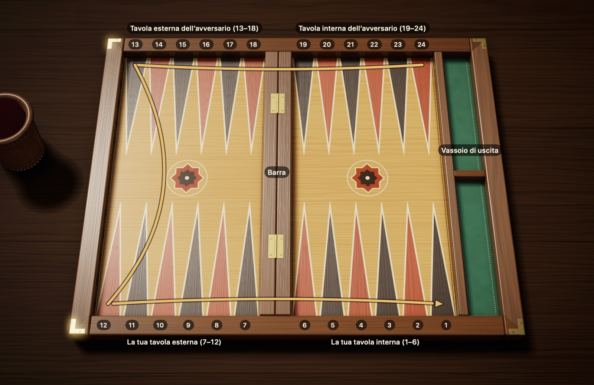
Figura 2.1Il tavoliere: 24 punte, quattro quadranti e la barra. Tu sei in basso. La freccia dorata mostra il percorso delle tue pedine dalla punta 24 alla punta 1; il tuo avversario fa lo stesso percorso in senso inverso.
I quadranti. Immagina il tavoliere come un campo diviso in quattro quadranti, ognuno con sei punte. I due quadranti davanti a te sono il tuo lato, i due di fronte sono il lato del tuo avversario:
La tua tavola interna (1–6): dove finisce il viaggio. Una volta arrivate qui, le pedine vengono portate fuori dal tavoliere. Nella Figura 2.1 è in basso a destra.
La tua tavola esterna (7–12): l’ultima tappa prima della tavola interna. In basso a sinistra.
La tavola esterna dell’avversario (13–18): metà strada. In alto a sinistra.
La tavola interna dell’avversario (19–24): dove comincia il viaggio. In alto a destra.
La barra. Il rialzo al centro del tavoliere si chiama barra. Ha due funzioni: separa la metà sinistra del tavoliere da quella destra ed è il posto dove aspettano le pedine colpite. Non conta nel calcolo delle punte: una pedina che passa dalla 7 alla 6 fa un solo passo, anche se in mezzo c’è la barra.
La logica dei numeri. La numerazione parte per ciascuno dalla propria tavola interna. Per questo ogni triangolo ha due nomi: la punta che tu chiami 1, il tuo avversario la chiama 24. Per evitare confusione, in questo libro tutti i numeri sono scritti dal tuo punto di vista.
La direzione di marcia. Le tue pedine si muovono sempre verso i numeri più bassi. Una pedina che parte dalla 24, in alto a destra, va prima verso sinistra lungo il bordo superiore, scende sul lato sinistro, poi avanza verso destra lungo il bordo inferiore e arriva nella tua tavola interna. Le pedine dell’avversario fanno lo stesso percorso al contrario: per questo, lungo la strada, i due giocatori si vengono incontro.
Il tavoliere a specchio. Alcuni giocatori preferiscono avere la tavola interna a sinistra. In questo caso tutto il tavoliere è specchiato e le pedine girano in senso orario. Per le regole, tra le due disposizioni non c’è alcuna differenza.
2.2 La disposizione iniziale
Ogni partita parte dalla stessa posizione iniziale. Disponi le tue 15 pedine in quattro posti, dal più lontano al più vicino, così:
Punta 24, 2 pedine. L’angolo della tavola interna dell’avversario. Questa coppia è formata dalle tue pedine più lontane da casa.
Punta 13, 5 pedine. L’angolo in alto a sinistra: esattamente a metà strada.
Punta 8, 3 pedine. Nella tua tavola esterna, a due passi dalla tavola interna.
Punta 6, 5 pedine. La punta della tua tavola interna che confina con la barra.
2 + 5 + 3 + 5 fa 15. Il tuo avversario prepara la stessa disposizione dal suo lato, quindi le sue pedine si trovano sulle tue punte 1, 12, 17 e 19. Se piegassi il tavoliere a metà, i due lati combacerebbero perfettamente.
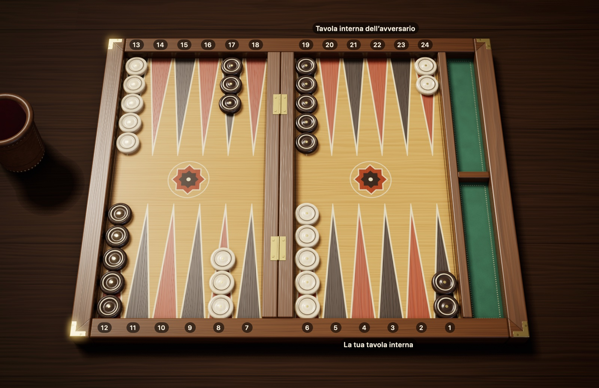
Figura 2.2La disposizione iniziale: 15 pedine per giocatore. Le tue pedine sono color crema e la tua tavola interna è in basso a destra; le pedine dell’avversario sono marrone scuro e la sua tavola interna è in alto a destra. Hai 2 pedine sulla 24, 5 sulla 13, 3 sull’8 e 5 sulla 6.
Un modo facile per ricordarla: memorizza «2-5-3-5» e disponi le pedine partendo dalla punta più arretrata. Un terzo delle tue pedine (5 pedine) è già nella tua tavola interna, le altre sono sparse lungo il percorso. Buona parte della partita consiste nel riportare a casa senza rischi le pedine rimaste indietro.
2.3 Come inizia la partita
Chi fa la prima mossa lo decidono i dadi. Ogni giocatore lancia un solo dado e inizia chi ottiene il numero più alto. Se i numeri sono uguali il lancio non vale: entrambi ritirano finché non escono numeri diversi.
Per la prima mossa del vincitore esistono due tradizioni diverse:
Regola internazionale: nessuno ritira. I due dadi sul tavoliere, cioè il tuo e quello del tuo avversario, formano insieme la tua prima mossa. Se tu hai fatto 5 e l’avversario 3, giochi 5-3. Poiché i dadi del tiro d’apertura non possono essere uguali, questa prima mossa non è mai un doppio.
Regola turca più diffusa: il vincitore prende tutti e due i dadi e fa un nuovo tiro. Questo tiro può dare qualsiasi risultato, doppi compresi.
Da quel momento i giocatori si alternano, lanciando due dadi a ogni turno.
Nuova partita. Con le regole internazionali ogni partita riparte da zero con il tiro d’apertura. Nel tavla turco, invece, di solito apre la partita chi ha vinto quella precedente.
Il galateo del lancio. Quando si gioca al tavolo valgono alcune consuetudini. Di solito i dadi si agitano nel bussolotto e si lanciano nella metà destra del tavoliere. Se un dado cade storto, resta sopra una pedina o finisce fuori dal tavoliere, il lancio non vale: si ripete con entrambi i dadi. Il turno passa a te nel momento in cui l’avversario raccoglie i suoi dadi; un lancio fatto prima non conta. Qui è descritto il galateo tradizionale del tavolo; i regolamenti dei tornei possono differire in questi dettagli a seconda che si usino l’orologio, il bussolotto o quattro dadi.
2.4 Regole turche e regole internazionali
In entrambi i set il conteggio delle punte, le regole sui dadi e le regole su dove ci si può fermare sono gli stessi. Le differenze riguardano l’inizio, il punteggio e due dettagli di gioco: nel tavla turco più diffuso sono considerati vietati colpire e fuggire nella propria tavola interna e, durante l’uscita, sprecare pip quando si potrebbe portare fuori una pedina. La tabella qui sotto segue le regole più diffuse; da un tavolo all’altro possono esserci piccole differenze.
In Pedine e Dadi puoi giocare con entrambi i set di regole. In questo libro, dove i due set differiscono, sono indicate entrambe le regole; ti basta scegliere con quale giocare prima di iniziare la partita.
Tabella 2.1 Tavla turco e regole internazionali
Argomento
Internazionali (con il cubo)
Tavla turco più diffuso
Prima mossa
Si gioca con i dadi del tiro d’apertura, non può essere un doppio
Chi fa il numero più alto ritira i due dadi, può uscire un doppio
Chi inizia la partita successiva
A ogni partita si fa il tiro d’apertura
Inizia chi ha vinto la partita precedente
Colpire e fuggire nella propria tavola interna
Consentito
Considerato vietato (in Pedine e Dadi si sceglie nel nuovo match; per impostazione predefinita è consentito)
Durante l’uscita, muovere una pedina quando se ne potrebbe portare fuori una («sallamak»)
Consentito
Considerato vietato (in Pedine e Dadi si sceglie nel nuovo match; per impostazione predefinita è consentito)
Backgammon
Sì (× 3)
No, conta come gammon (× 2)
Cubo del raddoppio
Standard, obbligatorio nei tornei
Assente
Regola di Crawford
Standard nei match
Assente
2.5 La schermata di gioco di Pedine e Dadi
Quando inizia un match, intorno al tavoliere compaiono delle aree che mostrano lo stato della partita. La Figura 2.3 è stata presa durante un tuo turno; qui sotto trovi il significato dei numeri.
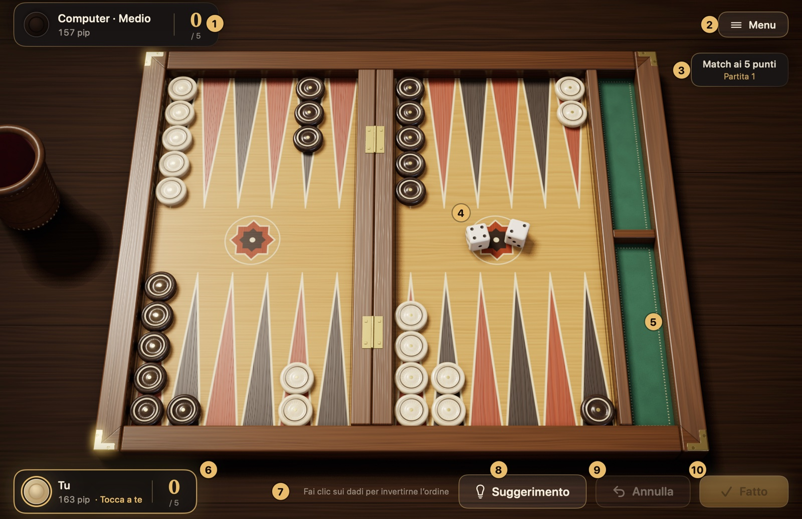
Figura 2.3La schermata di gioco di Pedine e Dadi. Il significato degli elementi numerati è nell’elenco qui sotto.
Targhetta dell’avversario: mostra il tuo avversario (con il livello di difficoltà, per esempio «Computer · Medio»), il suo conteggio dei pip e i suoi punti nel match. Mentre il computer riflette compare «Sta pensando…».
Menu: mette in pausa la partita. Nella scheda che si apre trovi le voci per riprendere, le impostazioni, la scheda «Come si gioca», la cronologia delle mosse, i match, l’abbandono e l’uscita dal match. Anche il tasto Esc fa la stessa cosa.
Informazioni sul match: mostrano a quanti punti si gioca il match (in una sessione compare «Sessione») e a quale partita sei. Con le regole internazionali, sotto c’è l’indicatore del cubo.
Dadi: i tuoi dadi cadono nella metà destra del tavoliere, quelli del computer nella metà sinistra.
Vassoio di uscita: il vassoio verde alla destra del tavoliere. Le tue pedine portate fuori si allineano nella metà inferiore, quelle dell’avversario nella metà superiore.
La tua targhetta: mostra il tuo conteggio dei pip, i tuoi punti nel match e, quando tocca a te, l’avviso «Tocca a te».
Riga dei consigli: ti dice in breve che cosa puoi fare in quel momento. Se tenti una mossa non valida, qui leggi anche il motivo, per esempio «Questa pedina non può muoversi con questi dadi».
Suggerimento: segna sul tavoliere la mossa suggerita dal motore Maestro (⌘I).
Annulla: annulla i passi giocati in questo turno (⌘Z); prima di confermare puoi cambiare idea.
Fatto: conclude il tuo turno e passa la mano all’avversario (Invio).
Prima di cominciare. Nel pannello Nuovo match scegli il livello di difficoltà, il set di regole (tavla turco o internazionale), la lunghezza del match o, con le regole internazionali, la sessione, e il colore delle tue pedine. Queste scelte valgono per tutto il match; i dettagli nella sezione 5.1.
Come si svolge un turno? Quando tocca a te, premi il pulsante «Lancia i dadi» o il tasto Spazio: i dadi escono dal bussolotto di cuoio e cadono sul tavoliere. Muovi una pedina trascinandola e rilasciandola, oppure facendo clic prima sulla pedina e poi sulla punta di arrivo; le pedine che puoi muovere si illuminano e le punte dove possono andare sono cerchiate. Se non sei sicuro, con Annulla torni all’inizio; quando hai deciso, premi Fatto. Una mossa contro le regole, comunque, l’app non la accetta.
Che cosa dice il conteggio dei pip? Il numero di pip sulle targhette indica quante punte deve ancora percorrere quel giocatore per portare a casa e poi fuori tutte le sue pedine. Chi ha il numero più basso è in vantaggio nella corsa. I dettagli nella sezione 4.2.
Capitolo 3
Le regole del gioco
Questo capitolo spiega in ordine tutte le regole del gioco: il movimento delle pedine, i doppi, la mossa obbligata, il colpire e il rientro delle pedine colpite, l’uscita, il punteggio e il cubo del raddoppio.
3.1 Il movimento delle pedine
Il giocatore di turno lancia due dadi e fa avanzare le sue pedine di tante punte quanti sono i numeri usciti. Questa sezione spiega passo dopo passo come si gioca un dado.
Leggere i dadi
I dadi dicono di quante punte avanzano le pedine. Un 4 significa che una pedina avanza di 4 punte. Quando conti, non conti la punta su cui si trova la pedina: cominci da quella successiva. Una pedina sulla 13, con un 4, conta 12, 11, 10, 9 e arriva sulla 9.
Nel backgammon non c’è la retromarcia: una pedina può muoversi solo verso punte con un numero più basso, cioè avvicinandosi alla propria tavola interna.
Due dadi, due mosse separate
Considera i due dadi come due diritti separati. Con un 5-3 puoi usarli come vuoi:
Puoi giocare il 5 con una pedina e il 3 con un’altra.
Puoi darli entrambi alla stessa pedina e spostarla di 8 punte in tutto; puoi giocare prima il 3 oppure prima il 5.
Quando giochi due dadi con una sola pedina, in realtà la pedina fa due salti separati e si posa per un attimo sulla punta in cui finisce il primo salto. Anche quella punta intermedia deve essere un posto dove la pedina può fermarsi. Non puoi contare la somma dei due dadi in un colpo solo e scavalcare la punta intermedia.
Figura 3.1Due modi di giocare un 5-3. Frecce verdi, modo 1: 8→3 (5) e 6→3 (3); due pedine diverse fanno un punto sulla 3. Frecce blu, modo 2: 24→21 (3), poi 21→16 (5); la stessa pedina percorre 8 punte in tutto. La stessa pedina non può giocare prima il 5: la punta 19, con la cornice rossa, è un punto dell’avversario e non può fare da tappa intermedia.
Vale anche il contrario: non puoi dividere un singolo dado in più parti. Suddividere un 5 in 3 e 2 tra due pedine diverse è contro le regole; ogni dado appartiene per intero a una sola pedina.
Dove si può fermare una pedina?
Quando muovi una pedina, conta com’è la punta di arrivo. Le possibilità sono quattro:
Tabella 3.1 Dove può fermarsi una pedina, secondo la punta di arrivo
Che cosa c’è sulla punta di arrivo?
Ci si può fermare?
Nessuna pedina (punta vuota)
Sì
Una o più pedine tue
Sì, senza limiti di numero
Una sola pedina avversaria (scoperta)
Sì, e la pedina avversaria viene colpita
Due o più pedine avversarie (un punto)
No
Figura 3.2Punte libere e punto. Per la pedina sull’11: la punta 10 è vuota, ci si può fermare. Sull’8 ci sono pedine tue: puoi aggiungerne quante vuoi. Sulla 7 c’è una sola pedina avversaria (scoperta): puoi fermarti lì e quella pedina viene colpita. Sulla 9, con la cornice rossa, ci sono due pedine avversarie (un punto): la freccia rossa tratteggiata indica che lì non puoi fermarti.
Una punta su cui stanno insieme due o più pedine si chiama punto. Pensa al punto come a un muro: l’avversario non può né fermarcisi né usarlo come tappa intermedia in una mossa con due dadi. Costruire con intelligenza i tuoi punti è il modo più efficace per restringere la strada all’avversario.
3.2 I doppi
Quando i due dadi mostrano lo stesso numero (da 1-1 a 6-6) ricevi un premio: quel numero non lo usi due volte, ma quattro. Chi fa 5-5 gioca quattro mosse da 5 e avanza in tutto di 20 punte. Questi tiri si chiamano doppi.
Puoi distribuire le quattro mosse come vuoi: una a testa a quattro pedine diverse, due a testa a due pedine o tutte e quattro a una sola pedina. Se fai più passi con la stessa pedina, ogni tappa intermedia su cui passa deve essere libera.
Figura 3.3Doppio: quattro mosse con 4-4. Porta le due pedine dalla 24 alla 20 (4 + 4) e due pedine dalla 13 alla 9 (4 + 4). Ognuna delle quattro mosse è di 4 punte; puoi distribuirle tra le pedine che vuoi.
3.3 La mossa obbligata
Dopo aver lanciato i dadi non hai il diritto di dire «questo turno lo passo». Se i dadi permettono una mossa, sei obbligato a farla. Per capire quale dado usare e in che misura, fatti queste domande:
C’è una mossa che usa entrambi i dadi? Se c’è, devi farla. Se la prima mossa che ti viene in mente spreca un dado, cerca un’altra strada in cui ci stiano tutti e due.
Si può giocare un solo dado? Allora giochi il dado che si può giocare e l’altro va perso.
I dadi si possono giocare uno alla volta, ma non tutti e due? In questo caso la scelta non spetta a te: devi usare il dado più alto. La Figura 3.4 lo mostra.
Non si può giocare nessun dado? Il tuo turno va perso e tocca all’avversario tirare.
È uscito un doppio? Se non ci stanno tutte e quattro le mosse, devi fare il numero massimo di mosse che si possono giocare regolarmente; se l’ordine delle mosse cambia questo numero, devi scegliere l’ordine che ne permette di più. Le altre vanno perse.
Figura 3.4La regola del dado più alto: 6-5. La pedina sulla 14 può andare sull’8 con il 6 (freccia verde) o sulla 9 con il 5 (freccia tratteggiata), ma non può giocarli entrambi: in tutti e due i percorsi il secondo passo porta sulla punta 3 (cornice rossa), che è un punto dell’avversario. Le altre tue pedine, in fondo alla tavola interna, non possono giocare nessuno dei due dadi. Se i dadi si possono giocare uno alla volta ma non insieme, si gioca il più alto: 14→8.
Per effetto di queste regole a volte resta una sola mossa possibile: si chiama mossa obbligata. Nel backgammon digitale è l’app stessa a controllare queste regole e a non consentire mosse irregolari; sul tavoliere vero, invece, sta a te fare attenzione.
3.4 Pedine scoperte e colpi
A rendere emozionante il backgammon è il colpire. Prima, però, bisogna distinguere due situazioni:
Pedina scoperta: una pedina rimasta da sola su una punta. Non è protetta: se l’avversario ci arriva sopra, viene cacciata dal suo posto.
Punto: una punta occupata da almeno due pedine dello stesso colore. Le pedine che stanno qui non si possono toccare.
Quando porti una tua pedina sulla punta dove si trova una pedina scoperta dell’avversario, la colpisci. La pedina colpita viene tolta dal tavoliere e messa sulla barra, al centro. Per l’avversario è un bel passo indietro: quella pedina deve ricominciare il viaggio da capo e, finché non torna sul tavoliere, l’avversario ha le mani legate.
Figura 3.5Colpire: con 13→9 si colpisce la pedina scoperta. Con il 4, 13→9: ti fermi sulla pedina isolata dell’avversario e la colpisci; la pedina colpita va sulla barra (freccia tratteggiata). Con il 2, 11→9: porti lì anche una seconda pedina e fai un punto sulla 9; ora le tue pedine non possono più essere colpite.
Cose da sapere:
Colpire non è obbligatorio. Anche quando puoi colpire una pedina scoperta, puoi scegliere di fare un’altra mossa.
Dopo aver colpito puoi proseguire con la stessa pedina. Per esempio, con un 4-2 puoi portare una pedina avanti di 4 punte e colpire, poi farla avanzare di altre 2 punte. È il cosiddetto «colpisci e fuggi» («vur kaç» in turco). Con le regole internazionali è consentito ovunque sul tavoliere; nel tavla turco più diffuso e nel portes greco, invece, è vietato proseguire con la stessa pedina dopo aver colpito nella propria tavola interna. In Pedine e Dadi, quando giochi con le regole turche, puoi attivare questo divieto con l’opzione «No colpisci e fuggi» del pannello Nuovo match; per impostazione predefinita è disattivato.
Nella stessa mossa puoi colpire più di una pedina scoperta: per esempio una pedina può colpirne una sulla tappa intermedia dei due dadi e un’altra sulla punta di arrivo.
Le stesse regole valgono anche per te. Una pedina che lasci scoperta viene colpita se i dadi dell’avversario lo permettono. Per questo, quando puoi, cerca di tenere le tue pedine in coppia.
3.5 Far rientrare una pedina colpita
Quando viene colpita una tua pedina, al tuo turno hai un solo compito: rimettere quella pedina sul tavoliere. Finché hai una pedina che aspetta sulla barra, tutte le altre tue pedine sono come congelate.
Da dove rientra? La pedina colpita ricomincia il viaggio dall’inizio, cioè dalla tavola interna dell’avversario. La punta su cui rientra la decide il dado. Conta le punte della tavola interna dell’avversario da 1 a 6, dal bordo verso la barra: se fai 1 rientri sulla punta nell’angolo del tavoliere, se fai 6 sulla punta accanto alla barra. Con la tua numerazione:
Tabella 3.2 La punta su cui rientra la pedina colpita, secondo il dado
Dado
Punta di rientro
1
24
2
23
3
22
4
21
5
20
6
19
Sulla punta indicata dal dado può non esserci nessuna pedina, possono esserci pedine tue oppure una sola pedina avversaria. In tutti e tre i casi rientri; nell’ultimo, rientrando, colpisci quella pedina. Ti è chiusa solo una punta su cui l’avversario ha fatto un punto.
Figura 3.6Far rientrare una pedina colpita: 5-2. La tua pedina sulla barra rientra nella tavola interna dell’avversario: con l’1 sulla 24, con il 2 sulla 23 … con il 6 sulla 19. Con il 5 non puoi rientrare: sulla punta 20 l’avversario ha un punto (cornice rossa). Con il 2 rientri sulla punta 23, che è vuota (cornice verde). Dopo il rientro giochi il 5 con un’altra pedina o con quella appena rientrata.
Il rientro passo per passo:
Lancia i dadi e guarda a quale punta della tavola interna dell’avversario corrisponde ciascun dado.
Se almeno una di queste punte è libera per te, metti lì la tua pedina.
Il rientro usa un dado. L’altro dado resta libero: lo giochi con la pedina che vuoi, anche con quella appena rientrata.
Se hai due pedine sulla barra, entrambi i dadi servono per farle rientrare. Se ne può rientrare una sola, fai rientrare quella; poiché la seconda aspetta ancora sulla barra, in quel turno non puoi fare altre mosse.
Si rientra con un solo dado. Supponiamo che tu abbia fatto 5-2: la 20 e la 23 sono punti dell’avversario, mentre la punta 18 è vuota. Non puoi sommare i due dadi e contare 7 punte per arrivare direttamente sulla 18. Prima la pedina deve rientrare con un solo dado su una punta libera della tavola interna dell’avversario; qui sono chiuse tutte e due, quindi non si rientra.
Restare fuori
Se su entrambe le punte indicate dai due dadi l’avversario ha un punto, la tua pedina sulla barra per quel turno resta fuori: in turco questo tiro sfortunato si chiama «gele». Poiché con una pedina sulla barra non si possono muovere altre pedine, il tuo turno va perso; ci riproverai al turno successivo.
Chiuso fuori
Il caso peggiore è che l’avversario abbia fatto punto su tutte e sei le punte della sua tavola interna. Allora, qualunque numero esca, non c’è nessuna punta su cui rientrare: in questo caso sei chiuso fuori. Finché l’avversario non apre uno dei suoi punti, il tuo turno passa ogni volta senza mosse; al tavolo non serve nemmeno lanciare i dadi, il turno passa direttamente all’avversario. In Pedine e Dadi è lo stesso: non si lanciano i dadi, sullo schermo compare «Chiuso fuori» e il turno passa direttamente all’avversario.
Figura 3.7Chiuso fuori: la tavola interna dell’avversario è tutta chiusa. La tua pedina sulla barra potrebbe rientrare su una punta libera tra la 19 e la 24, ma tutte e sei le punte sono punti (cornici rosse). Questa situazione si chiama «chiuso fuori»: finché l’avversario non apre un punto, il tuo turno passa senza che si lancino i dadi.
3.6 L’uscita delle pedine
L’ultimo rettilineo della corsa consiste nel togliere le pedine dal tavoliere: questa fase si chiama uscita. C’è però una condizione: tutte le tue pedine rimaste sul tavoliere devono trovarsi nella tua tavola interna, cioè sulle punte da 1 a 6. Se anche una sola pedina è fuori dalla tavola interna o aspetta sulla barra, non puoi cominciare a portare fuori.
La regola di base
La regola è semplice: il numero del dado indica la punta da cui togli una pedina. Se esce 6 prendi una pedina dalla punta 6, se esce 2 dalla punta 2, e la metti nello spazio a lato del tavoliere. La pedina uscita ha lasciato il gioco per sempre.
Figura 3.8Uscita: due pedine con 6-4. Con il 6 prendi una pedina dalla punta 6, con il 4 una dalla punta 4, e le metti nel vassoio di uscita, a destra. L’uscita comincia solo quando tutte e 15 le pedine sono nella tua tavola interna.
Se sulla punta del dado non ci sono pedine
A volte la punta indicata dal dado è vuota. Allora fatti queste due domande, nell’ordine:
Ho pedine su una punta con numero più alto? Se sì, con quel dado non puoi portare fuori una pedina da una punta più bassa; di solito giochi il dado facendo avanzare una pedina che si trova su quella punta più alta.
Non ho nessuna pedina più in alto? Allora porti fuori una pedina dalla punta più alta su cui ne hai. Per esempio, se la tua pedina più lontana è sulla 4, sia il 6 sia il 5 la portano fuori.
Figura 3.9Uscita: se c’è una pedina più in alto, si fa avanzare. Per il 5: la punta 5 è vuota, ma sulla punta 6, più alta, ci sono pedine; con il 5 non puoi portare fuori dalla 3 né dall’1. Giochi il 5 facendo avanzare una pedina della 6 (6→1), e con l’1 porti fuori una pedina dalla punta 1. Un’altra possibilità: prima 6→5 con l’1, poi porti fuori quella pedina dalla punta 5 con il 5. Nel vassoio di uscita ci sono già 10 pedine portate fuori in precedenza.Figura 3.10Uscita: dalla punta più alta. Non hai più pedine sulle punte 6 e 5 né più in alto. In questo caso, con ciascuno dei due dadi porti fuori una pedina dalla punta occupata più alta, cioè dalla 4.
Non sei obbligato a portare fuori
Se hai un’altra mossa regolare, non sei obbligato a portare fuori una pedina. Puoi far scorrere le pedine all’interno della tavola interna e rimandare l’uscita: in turco si dice «sallamak». A volte è la scelta più saggia, per non lasciare all’avversario una pedina scoperta da colpire. È consentito anche spostare una pedina con un dado e portarla fuori con l’altro. Questa libertà vale con la regola internazionale; nel tavla turco più diffuso, quando si può portare fuori una pedina, è considerato vietato farla avanzare con il dado più basso sprecando pip. In Pedine e Dadi, quando giochi con le regole turche, puoi attivare questo divieto con l’opzione «Uscita obbligata» del pannello Nuovo match; per impostazione predefinita è disattivato.
Se vieni colpito durante l’uscita
Se l’avversario ha una pedina che aspetta nella tua tavola interna, una pedina che lasci scoperta durante l’uscita può essere colpita. In quel caso l’uscita si interrompe: la pedina colpita deve prima rientrare dalla tavola interna dell’avversario, fare il giro del tavoliere e tornare nella tua tavola interna. Quando tutte le tue pedine rimaste sul tavoliere sono di nuovo nella tavola interna, riprendi da dove avevi lasciato.
3.7 La fine della partita e i punti
Vince la partita chi porta fuori per primo tutte le sue pedine. L’entità della vittoria, invece, dipende da quanto è rimasto indietro il tuo avversario nel momento in cui finisci. A fine partita guarda le pedine dell’avversario: sarà vera una delle tre situazioni seguenti.
Tabella 3.3 Il risultato della partita e i punti
Risultato
Situazione dell’avversario
Internazionale, senza cubo
Internazionale, con il cubo
Tavla turco
Partita semplice
Ha portato fuori almeno una pedina
1
Valore del cubo × 1
1
Gammon
Non ha portato fuori nessuna pedina
2
Valore del cubo × 2
2
Backgammon
Non ha portato fuori nessuna pedina e ne ha ancora una sulla barra o nella tua tavola interna
3
Valore del cubo × 3
2 (conta come gammon)
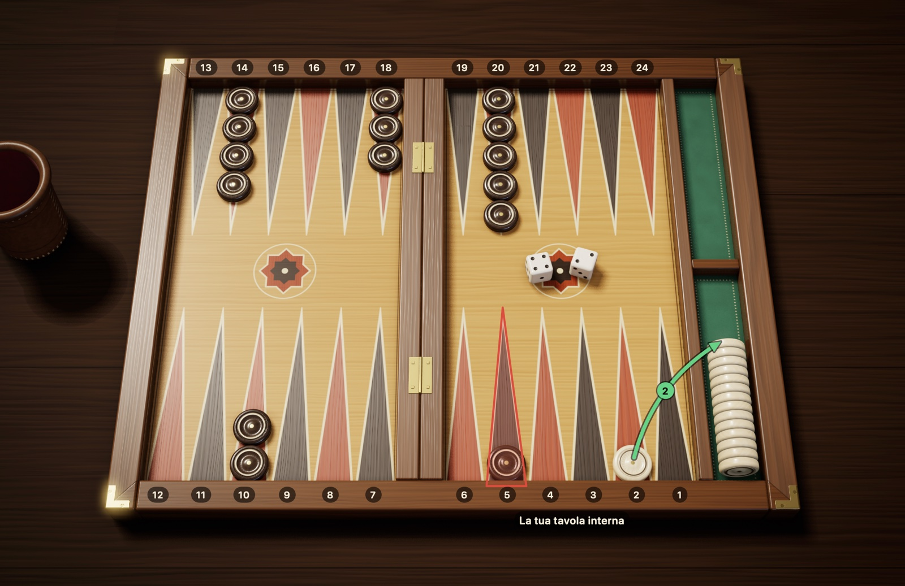
Figura 3.11Backgammon: l’avversario è a zero e ha una pedina nella tua tavola interna. Con il 2 hai portato fuori la tua ultima pedina e hai vinto la partita. L’avversario non ha portato fuori nessuna pedina: già questo significa gammon (2 punti). In più ha ancora una pedina sulla punta 5 con la cornice rossa, cioè nella tua tavola interna: backgammon (3 punti).
Esempi:
Se, quando porti fuori la tua ultima pedina, l’avversario ne ha già portate fuori 4, vinci una partita semplice: 1 punto.
Se l’avversario non ha portato fuori neanche una pedina, ma non ne ha più sulla barra né nella tua tavola interna, vinci un gammon: 2 punti.
Se l’avversario non ha portato fuori nessuna pedina e ne ha ancora una sulla barra o nella tua tavola interna, vinci un backgammon: 3 punti.
Chi vince un gammon con il cubo del raddoppio a 8 prende 8 × 2 = 16 punti.
Nel tavla turco il backgammon non è un risultato a sé: anche quella situazione conta come gammon e vale 2 punti. Prima di giocare, chiarisci con quale set di regole si gioca.
Il punteggio del match. Di solito il backgammon non si gioca a partita singola, ma fino a un certo punteggio; nei tornei in genere sono 5, 7 o 11 punti. Alla fine di ogni partita i punti vengono segnati a favore del vincitore; se si gioca con il cubo, si moltiplicano per il valore del cubo. Vince il match chi raggiunge per primo il punteggio stabilito. Per questo vincere un gammon, o evitarlo, può cambiare l’esito del match.
3.8 Il cubo del raddoppio
Il cubo del raddoppio è un cubo con dei numeri sulle facce, che però non si lancia mai. Sulle sue facce ci sono i numeri 2, 4, 8, 16, 32 e 64, e il suo unico compito è mostrare quanto vale la partita in quel momento. Nel tavla che si gioca nei quartieri, in Turchia, non si vede quasi mai; nei tornei internazionali e nelle partite online, invece, è irrinunciabile. Anche Pedine e Dadi ha il cubo del raddoppio: si usa quando all’inizio scegli il set di regole internazionale; come raddoppiare e come rispondere a un’offerta è spiegato nella sezione 5.4. Se giochi senza cubo, puoi saltare questa sezione.
Dove sta il cubo e che cosa significa
All’inizio della partita il cubo sta a metà strada tra i due giocatori e sulla faccia superiore si legge 64. Poiché sul cubo non c’è l’1, qui il 64 significa «non ancora raddoppiato, la partita vale 1 punto». Finché il cubo è al centro, la prima offerta può farla uno qualsiasi dei due. Dopo che un’offerta è stata accettata, invece, il giocatore davanti al quale si trova il cubo è quello che ha il diritto alla prossima offerta. In Pedine e Dadi il cubo è indicato sotto le informazioni sul match, in alto a destra: all’inizio c’è scritto «1 Cubo al centro»; dopo che un raddoppio è stato accettato, accanto al valore del cubo si legge «Cubo a te» oppure «Cubo all’avversario».
Raddoppiare passo per passo
Quando? L’offerta si può fare solo durante il tuo turno, prima di toccare i dadi. Una volta lanciati i dadi, per quel turno l’occasione è passata.
Come? Se pensi che la tua posizione sia buona, giri il cubo sul valore successivo (la prima volta sul 2), lo porgi all’avversario e dici «raddoppio». Il senso è: «Giochiamo questa partita per il doppio?»
Che cosa può fare l’avversario?
Accetta: prende il cubo dalla sua parte, con il valore raddoppiato (al primo raddoppio il 2) rivolto verso l’alto; la partita continua dalla posizione in cui si trova, ma ora vale il doppio.
Rifiuta: abbandona la partita in quel momento. I punti che perde corrispondono al valore del cubo prima dell’offerta; alla prima offerta è 1 punto.
A chi spetta l’offerta successiva? Il cubo passa al giocatore che ha accettato l’offerta, e il diritto al raddoppio successivo spetta solo a lui. Per questo le offerte si alternano sempre tra i due giocatori; lo stesso giocatore non può raddoppiare due volte di seguito.
Un esempio
Supponiamo che all’inizio della partita il tuo avversario abbia raddoppiato e che tu abbia accettato: il cubo è sul 2, davanti a te. Qualche turno dopo la partita gira a tuo favore, così giri il cubo sul 4 e lo porgi all’avversario. Se lui rifiuta, vinci la partita e prendi 2 punti. Se accetta, il cubo sul 4 passa davanti a lui, e i punti vinti a fine partita si leggono nella riga «4» della Tabella 3.4.
Tabella 3.4 Punti vinti secondo il valore del cubo
Cubo
Partita semplice
Gammon
Backgammon
Al centro (1)
1
2
3
2
2
4
6
4
4
8
12
8
8
16
24
Cose da sapere:
Il raddoppio non ha un tetto: dopo il 64 il valore continua a raddoppiare, 128, 256 e così via. A valori così alti, però, si arriva molto di rado.
Se il diritto di raddoppiare è tuo, avere una pedina che aspetta sulla barra non ti impedisce di fare l’offerta. In Pedine e Dadi l’unica eccezione è quando sei chiuso fuori: se la tavola interna dell’avversario è tutta chiusa, il turno passa senza lanciare i dadi e in quel turno non si può nemmeno raddoppiare.
Decidere se raddoppiare o no, e se accettare o no, è uno dei momenti in cui l’abilità conta di più; i criteri sono nel paragrafo successivo.
Le decisioni sul cubo
Usare bene il cubo è una delle abilità più sottili del backgammon. Quelle che seguono non sono regole assolute, ma criteri solidi per cominciare.
Per accettare: quando ricevi un’offerta, chiediti più o meno questo: «Se giocassi questa partita quattro volte, ne vincerei almeno una?» Se le tue probabilità di vincere sono intorno a una su quattro o più alte, di solito è giusto accettare. Rifiutando, infatti, la sconfitta è certa; accettando, invece, conservi la possibilità di ribaltare la partita e di usare poi il cubo a tuo favore. Questa soglia del 25% viene dal modello più semplice, che non tiene conto né del gammon né dei raddoppi successivi: il valore di avere il cubo in mano abbassa un po’ la soglia, il rischio di gammon la alza e il punteggio del match può spostarla in entrambe le direzioni.
Per offrire: se la tua posizione è nettamente migliore ma la partita non è ancora decisa, è il momento di raddoppiare. Evita tre errori:
Raddoppiare troppo presto: un raddoppio offerto con un piccolo vantaggio regala all’avversario sia un’accettazione comoda sia il possesso del cubo.
Raddoppiare troppo tardi: la tua posizione migliora al punto che l’avversario non accetta più e lascia la partita per 1 punto; se avessi raddoppiato un turno prima, avrebbe accettato e tu avresti giocato per il doppio. Questo si chiama «perdere il mercato».
Posizione troppo buona per raddoppiare: la posizione può essere così forte che l’avversario rifiuterebbe di sicuro il raddoppio. Se il guadagno che ti aspetti dal gammon, continuando a giocare senza usare il cubo, supera l’1 punto che otterresti con il rifiuto dell’avversario, la posizione è «troppo buona per raddoppiare». Questo criterio non vale nelle sessioni in cui si applica la regola Jacoby: lì, se non c’è stato nessun raddoppio, il gammon vale solo 1 punto, quindi bisogna girare il cubo. Anche nei match il punteggio cambia il valore del gammon.
La regola 8-9-12 nella corsa pura. Se il contatto è finito e la partita è ormai solo una corsa di pip, a decidere è il conteggio dei pip. Calcola la differenza in percentuale, dividendola per il conteggio del giocatore in vantaggio; se sei tu a essere indietro, dividila per il conteggio del tuo avversario, cioè del leader:
Tabella 3.5 La regola 8-9-12 nella corsa pura
Differenza di pip (rispetto al conteggio del leader)
Decisione
8% in vantaggio
Valuta il primo raddoppio
9% in vantaggio
Se il cubo è tuo, raddoppia di nuovo
Fino al 12% indietro
Se ricevi un’offerta, accetta
Più del 12% indietro
Rifiuta
Esempio: se il tuo conteggio è 80 e quello dell’avversario 88, sei avanti di 8 pip; questo fa il 10% di 80, il conteggio del leader, e sei nella zona del raddoppio. Poiché la regola si basa sul conteggio grezzo dei pip, sii un po’ più prudente se hai ammucchiato le pedine sulle punte basse. La regola vale quando tocca a te, quando il contatto è del tutto finito e nelle corse medie o lunghe; quando la partita si riduce alle ultime pedine, invece del calcolo percentuale bisogna guardare dove si trovano le pedine e, se si gioca un match, valutare a parte il punteggio.
Regole per match e sessioni
Regola di Crawford: in un match, quando uno dei giocatori arriva per la prima volta a un punto dal punteggio stabilito (a 4 punti in un match ai 5), nella partita immediatamente successiva il cubo non si usa; questa si chiama partita Crawford. Finita quella partita, il cubo torna in uso ed è libero fino alla fine del match. La regola scatta una sola volta per match: se in seguito anche l’altro giocatore arriva allo stesso punteggio, non si gioca una nuova partita Crawford. Lo scopo è impedire al giocatore in svantaggio di raddoppiare subito ogni volta, per colmare il distacco in una sola partita. La regola prende il nome dal giocatore americano John R. Crawford.
Regole facoltative (si trovano nelle sessioni, non si usano nei match):
Raddoppi automatici: se i dadi del tiro d’apertura sono uguali, il cubo viene girato automaticamente sul 2 e resta al centro. Di solito succede al massimo una volta per partita.
Beaver: il giocatore che riceve il raddoppio, mentre lo accetta, può raddoppiare subito un’altra volta, e il cubo resta a lui. Chi aveva raddoppiato può accettare il beaver o rifiutarlo; se rifiuta, perde il valore del raddoppio che aveva offerto, che al primo raddoppio è di 2 punti.
Raccoon: il giocatore che subisce il beaver, cioè chi ha offerto il primo raddoppio, può raddoppiare subito il valore ancora una volta. Il cubo resta al giocatore che aveva accettato il raddoppio; l’altro accetta il nuovo valore oppure lascia la partita al valore di quel momento. Come il beaver, si trova solo nelle sessioni.
Regola Jacoby: se nella partita non c’è stato nessun raddoppio, gammon e backgammon valgono solo 1 punto. Spinge il giocatore in vantaggio a raddoppiare invece di andare a caccia del gammon.
Capitolo 4
Giocare meglio
Dopo le regole, le basi per giocare bene: una partita d’esempio, il conteggio dei pip, le mosse d’apertura, i piani di gioco, il rischio di lasciare pedine scoperte e la strategia dell’uscita.
4.1 Una partita d’esempio: i primi cinque turni
Per vedere le regole all’opera tutte insieme, seguiamo passo per passo i primi cinque turni di una partita. Il tavoliere è nella disposizione iniziale e giochiamo con le regole internazionali. I numeri delle punte sono dal tuo punto di vista.
Il tiro d’apertura. Tu fai 3, il tuo avversario 1. Il numero più alto è il tuo: giochi la tua prima mossa con questo 3-1. Con il 3 giochi 8→5 e con l’1 6→5, e fai un punto sulla 5. È una delle mosse d’apertura più consigliate.
L’avversario fa 6-4. Fa correre una delle sue pedine arretrate: la pedina sulla tua punta 1 va sulla 7 con il 6 e sull’11 con il 4. La pedina resta da sola sull’11, cioè è scoperta.
Tu fai 4-2. Con il 2 giochi 13→11 e colpisci la pedina scoperta dell’avversario, che va sulla barra. Con il 4 giochi 24→20.
L’avversario fa 5-5. Ha una pedina sulla barra, quindi prima deve farla rientrare. Con il 5 dovrebbe rientrare sulla tua punta 5, ma lì hai un punto. Poiché tutti e quattro i dadi sono 5, l’avversario resta fuori: in questo turno non può muovere nessuna pedina.
Tu fai 6-5. Porti la pedina rimasta sulla 24 prima sulla 18 con il 6, poi sulla 13 con il 5. La 18 è vuota, quindi la tappa intermedia è libera; sulla 13 hai già delle pedine.
Dopo cinque turni il tavoliere appare come nella Figura 4.1:
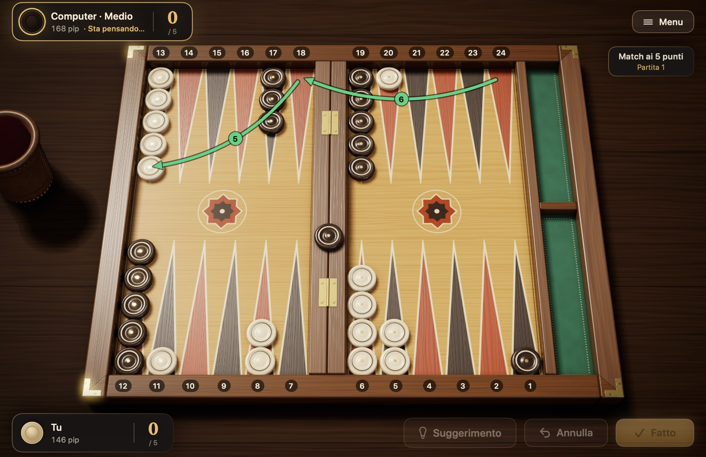
Figura 4.1Partita d’esempio: la posizione dopo il quinto turno. L’ultimo turno: con il 6-5 la pedina sulla 24 è corsa prima sulla 18, poi sulla 13 (frecce verdi). Una pedina dell’avversario aspetta sulla barra; il tuo punto sulla 5 gli rende più difficile rientrare. Le tue pedine scoperte sono sulla 20 e sull’11. I conteggi dei pip sulle targhette dei giocatori: tu 146, l’avversario 168; tocca all’avversario.
In questi cinque turni sono entrate in gioco tutte le regole: movimento, costruzione di un punto, colpo, rientro e pedina che resta fuori. La partita prosegue così, con i due giocatori che portano le loro pedine nella tavola interna e poi fuori.
4.2 Il conteggio dei pip
Poiché il backgammon è una corsa, in qualsiasi momento della partita la domanda «chi è più vicino a casa?» è importantissima. La misura è il conteggio dei pip: il numero totale di punte che un giocatore deve ancora percorrere per portare tutte le sue pedine nella tavola interna e toglierle dal tavoliere.
Come si calcola? La distanza di ogni pedina è il numero della punta in cui si trova, secondo la tua numerazione. Una pedina sulla punta 6 dista 6 pip, una sulla 13 dista 13 pip. Una pedina sulla barra è nella posizione più lontana e conta 25. Poi sommi le distanze di tutte le pedine.
Per esempio, all’inizio: 2 × 24 + 5 × 13 + 3 × 8 + 5 × 6 = 48 + 65 + 24 + 30 = 167 pip. Entrambi i giocatori cominciano la partita con 167. A ogni mossa il tuo conteggio scende di quanto la pedina avanza davvero (quando, durante l’uscita, porti fuori con un dado alto una pedina dalla punta più alta, il calo non è il valore del dado ma il numero della punta in cui si trovava la pedina); una pedina colpita, invece, tornando sulla barra fa salire di colpo il conteggio del suo proprietario.
In Pedine e Dadi non devi fare questo calcolo. Il conteggio dei pip sulle targhette dei giocatori si aggiorna da solo dopo ogni mossa. Nella partita d’esempio della sezione 4.1 tu sei a 146 pip e l’avversario a 168: hai quindi un vantaggio di circa tre tiri.
A che cosa serve questa informazione?
Se sei in vantaggio, di solito conviene evitare il contatto e tornare in fretta a casa.
Se sei indietro, è difficile vincere con la sola corsa: cerchi l’occasione per colpire le pedine dell’avversario o per sbarrargli la strada.
Se giochi con il cubo, nella corsa pura sono le differenze di pip a decidere il raddoppio. Che cosa fare con quale differenza è spiegato nella sezione 3.8, al paragrafo «Le decisioni sul cubo».
4.3 Le mosse d’apertura
Poiché la prima mossa della partita parte sempre dalla stessa posizione, le buone giocate per ogni tiro sono state in gran parte stabilite con le analisi al computer. La Tabella 4.1 riporta le giocate generalmente accettate per le partite con le regole internazionali, senza tenere conto del punteggio del match; in un match il punteggio può cambiare alcune scelte. La notazione è «da/a»: 8/5 significa dalla punta 8 alla punta 5; (2) indica che la stessa mossa si fa con due pedine.
Tabella 4.1 Le mosse d’apertura con le regole internazionali
Dadi
Giocata consigliata
Alternativa ragionevole
Obiettivo
3-1
8/5 6/5
—
Punto sulla 5
4-2
8/4 6/4
—
Punto sulla 4
6-1
13/7 8/7
—
Punto sulla 7, bloccare l’ingresso della tavola interna
5-3
8/3 6/3
—
Punto sulla 3
6-5
24/13
—
Mettere in salvo una pedina arretrata in una sola mossa
6-4
24/14
24/18 13/9 o 8/2 6/2
Le tre giocate si equivalgono quasi
6-3
24/18 13/10
24/15
Svilupparsi sia dal fondo sia dal centro
6-2
24/18 13/11
24/16
Svilupparsi sia dal fondo sia dal centro
5-4
24/20 13/8
13/9 13/8
Base per un’ancora in fondo, nuova pedina al centro
5-2
13/8 24/22
13/8 13/11
Sviluppo sicuro dal centro
5-1
13/8 24/23
13/8 6/5
Una pedina al sicuro, separare le pedine arretrate
4-3
13/10 13/9
24/21 13/9 o 24/20 13/10
Portare pedine utili per costruire la tavola interna
4-1
24/23 13/9
13/9 6/5
Separare le pedine arretrate, nuova pedina al centro
3-2
24/21 13/11
13/11 13/10
Separare le pedine arretrate, nuova pedina al centro
2-1
13/11 6/5
13/11 24/23
Tentare il punto sulla 5 o separare le pedine arretrate
Le giocate della tabella 4.1 si basano sulle analisi al computer del sito Backgammon Galore. Anche quelle della colonna «Alternativa ragionevole» sono buone giocate: nelle analisi la differenza tra loro è minima e puoi scegliere in base al tuo stile. Chi comincia e vuole giocare sul sicuro può preferire 13/11 24/23 con il 2-1 e, con il 6-4, 8/2 6/2, che non lascia nessuna pedina scoperta. Per confronto: la pedina scoperta lasciata con 24/14 viene colpita da 11 dei 36 tiri possibili; con 24/18 13/9, invece, almeno una delle due pedine scoperte viene colpita da 27 tiri su 36.
Con la regola internazionale la prima mossa non è mai un doppio. Se giochi con la regola turca, invece, anche il primo tiro può essere un doppio; in quel caso queste giocate sono un buon inizio:
Tabella 4.2 Il doppio al primo tiro con la regola turca
Doppio
Giocata consigliata
6-6
24/18(2) 13/7(2)
5-5
13/3(2)
4-4
24/20(2) 13/9(2)
3-3
8/5(2) 6/3(2)
2-2
13/11(2) 6/4(2)
1-1
8/7(2) 6/5(2)
Non serve imparare queste tabelle a memoria. Vale però la pena capire la logica comune a tutte: se puoi, fai un nuovo punto nella tua tavola interna o davanti a essa; se non puoi, muovi le pedine arretrate, e non lasciare pedine da sole dove sono facili da colpire.
4.4 I piani di gioco fondamentali
La maggior parte delle partite di backgammon si trasforma in uno di pochi piani ben noti. Quale sia quello giusto per te lo decidono la differenza di pip e i punti costruiti sul tavoliere. Passare da un piano all’altro man mano che la partita avanza è del tutto normale.
Corsa: se sei in vantaggio nel conteggio dei pip, interrompi il contatto con l’avversario e porti in fretta tutte le pedine a casa. Quando il contatto finisce, la partita diventa una pura corsa di dadi e di solito vince chi è in vantaggio.
Gioco d’attesa (ancora): tieni un punto con due pedine nella tavola interna dell’avversario. Questa «ancora» ti protegge dai colpi e ti dà la possibilità di colpire l’avversario se, tornando a casa, lascia una pedina scoperta. Se sei indietro, è il piano più solido.
Gioco di prime: costruendo punti uno accanto all’altro alzi una barriera davanti alle pedine arretrate dell’avversario. Se i punti di fila sono sei, la pedina dietro non può superarli con nessun tiro; fai scivolare lentamente il prime verso la tua tavola interna e stringi l’avversario.
Blitz: colpisci ripetutamente le pedine avversarie che entrano nella tua tavola interna e la chiudi in fretta. Un blitz riuscito lascia l’avversario chiuso fuori e porta spesso a un gammon; ma se fallisce, alle tue spalle restano le tue pedine scoperte.
Back game: quando sei molto indietro, tieni due ancore nella tavola interna dell’avversario e aspetti che, mentre raccoglie le pedine in casa, lasci una pedina scoperta. È un piano di salvataggio, non un inizio da scegliere di proposito.
Queste non sono regole meccaniche, ma intuizioni. Il tempismo, la qualità dei tuoi punti, la situazione delle pedine arretrate e il rischio di gammon possono richiedere il contrario di quello che suggerisce la differenza di pip: è un errore sia abbandonare subito un prime forte solo perché hai un grande vantaggio di pip, sia interrompere un blitz che sta andando bene solo perché sei indietro.
4.5 Il rischio di lasciare pedine scoperte
A volte non puoi evitare di lasciare una pedina da sola. Allora la domanda è: dove la lascio perché venga colpita il meno possibile? La risposta dipende da quante punte separano la pedina scoperta dalla pedina avversaria che può colpirla.
Figura 4.2La probabilità che una pedina scoperta venga colpita, secondo la distanza. La pedina scoperta a 6 punte di distanza è la più a rischio; da 7 in poi il rischio crolla. Le barre mostrano quanti dei 36 tiri possibili dell’avversario colpiscono la tua pedina scoperta (se in mezzo non ci sono punti).
Dalla Figura 4.2 si ricavano tre lezioni pratiche:
La distanza più pericolosa è 6. Una pedina scoperta a 6 punte di distanza viene colpita da 17 tiri su 36, cioè quasi da un tiro su due.
Da 7 in poi è molto più sicuro. Per colpire una pedina a questa distanza servono entrambi i dadi insieme; il rischio scende da valori vicini alla metà a un sesto e anche meno.
Vicino non vuol dire sempre sicuro. Anche una pedina scoperta a 1 punta di distanza viene colpita da 11 tiri su 36.
Questi numeri valgono per il caso in cui c’è una sola pedina avversaria, la strada è libera da punti e l’avversario non ha pedine in attesa sulla barra. Se sulla stessa pedina scoperta puntano più pedine avversarie il rischio aumenta; se i tuoi punti chiudono le tappe intermedie, diminuisce. A causa dei doppi, anche distanze come 12, 16, 20 e 24 si possono raggiungere in modi particolari: il rischio non diminuisce in modo regolare con la distanza.
4.6 La strategia dell’uscita
Le regole dell’uscita sono semplici, ma portare fuori bene le pedine è un’abilità. Partendo dalla stessa posizione, due giocatori possono ottenere, con decisioni diverse, una differenza di uno o due tiri; in una corsa equilibrata questa differenza decide la partita.
Mentre porti le pedine a casa
Porta le pedine sulle punte alte della tavola interna. Entrando nella tavola interna, cerca di sistemare le pedine sulle punte 6, 5 e 4. Le pedine ammucchiate troppo presto sulle punte 1 e 2, più avanti, ti faranno sprecare i dadi alti.
Distribuiscile in modo equilibrato. Se le pedine sono sparse sulle varie punte, qualunque dado esca potrai portarne fuori una. Le punte rimaste vuote significano invece che, quando esce quel numero, non potrai portare fuori nessuna pedina.
Non scendere in fondo senza motivo. Se, con una pedina appena entrata nella tavola interna, prosegui fino alla punta 1 per «avanzare ancora un po’», quando inizierà l’uscita un dado alto come il 6 ti servirà per 1 solo pip.
Quando non c’è contatto
Se le pedine dell’avversario hanno superato tutte le tue, non c’è più rischio di essere colpiti e la partita è una corsa pura. In questo caso il principio di base è: a ogni turno porta fuori il maggior numero possibile di pedine. Le analisi al computer mostrano che è la mossa migliore in quasi tutte le posizioni; solo con distribuzioni molto squilibrate può essere meglio sistemare una pedina all’interno per ridurre lo spreco dei dadi successivi. Se non puoi portare fuori pedine, usa il dado per riempire le punte vuote. Se fai un doppio, non perdere l’occasione di portare fuori quattro pedine in una volta.
Quando c’è contatto
Se una o due pedine dell’avversario sono ancora nella tua tavola interna, l’uscita non è una gara di velocità ma un gioco di sicurezza. Una sola pedina scoperta dà all’avversario la possibilità di ribaltare la partita.
Svuota dal fondo. Libera prima le punte più alte. Le pedine che aspettano vicino alla pedina avversaria sono le più pericolose.
Lascia un numero pari di pedine. Se tieni le pedine sulle punte a due a due o a quattro a quattro, le togli a coppie con i due dadi e liberi la punta senza lasciare una pedina da sola. Su una punta con un numero dispari di pedine, spesso ne resta una scoperta.
Cerca di chiudere i vuoti. Le punte vuote nella tua tavola interna possono costringerti a lasciare pedine scoperte con i tiri successivi.
Se serve, fai scorrere le pedine. Se portare fuori una pedina significa lasciarne una scoperta, spesso è meglio far scorrere le pedine all’interno della tavola interna e restare al sicuro.
Gli stessi principi valgono anche se hai cominciato l’uscita dopo aver colpito l’avversario, mentre la sua pedina aspetta sulla barra: l’avversario può rientrare in qualsiasi momento e colpire una tua pedina scoperta, quindi porta fuori le pedine tenendo la tavola interna il più chiusa possibile.
4.7 Consigli per chi comincia
Dopo aver imparato le regole, nelle tue prime partite ti saranno utili questi semplici principi:
Se devi lasciare una pedina scoperta, scegli dove. A volte una pedina da sola è inevitabile; allora lasciala dove l’avversario può colpirla con meno tiri, preferibilmente a 7 punte di distanza o più.
Dai valore alle punte della tua tavola interna. Ogni punto che costruisci nella tavola interna rende più difficile il rientro delle pedine avversarie che colpisci. Le punte 5 e 4 sono le più preziose.
Non ammucchiare le pedine in un solo posto. Accumulare cinque o sei pedine su una punta significa lasciarle ferme senza che servano a niente. Prendi pedine dai mucchi e usale per costruire nuovi punti.
Resta flessibile. Pedine a distanze diverse rendono utile la maggior parte dei tiri futuri. Evita disposizioni che dipendono sempre dagli stessi numeri.
Mettiti anche nei panni dell’avversario. Prima di fare la tua mossa, guarda in breve che cosa potrebbe fare l’avversario con il suo prossimo tiro.
Non avere fretta. Per ogni tiro confronta alcune possibilità. In Pedine e Dadi, prima di premere Fatto, puoi provare mosse diverse con Annulla.
Impara dalle partite perse. Nel backgammon la fortuna può decidere una singola partita; ma se ripeti sempre lo stesso errore, il problema non sono i dadi.
Capitolo 5
Usare Pedine e Dadi
Questo capitolo risponde passo per passo alla domanda «come si fa in Pedine e Dadi?», dalla creazione di un match alle impostazioni. I nomi dei pulsanti e dei menu sono scritti come compaiono nell’app.
5.1 Iniziare un nuovo match
Nel menu principale premi «Nuovo match» (⌘N). Nel pannello che si apre ci sono quattro scelte; con «Inizia» il match comincia.
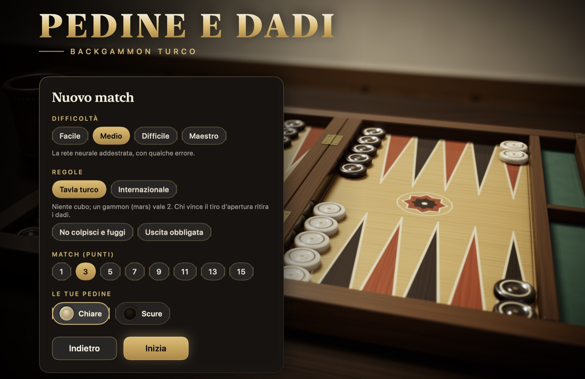
Figura 5.1Il pannello Nuovo match: difficoltà, regole, match o sessione e colore delle tue pedine.
Difficoltà: «Facile» sbaglia spesso ed è ideale per imparare. «Medio» è una rete neurale addestrata che ogni tanto sbaglia. «Difficile» è una rete neurale addestrata con milioni di partite. «Maestro», in più, calcola tutte le combinazioni possibili dei dadi.
Regole: «Tavla turco» o «Internazionale». Le differenze sono nella Tabella 2.1. Quando è selezionato il tavla turco, sotto compaiono due regole tradizionali: «No colpisci e fuggi» e «Uscita obbligata». Entrambe sono disattivate per impostazione predefinita. Le regole scelte non cambiano per tutto il match.
Match o sessione: con «Match (punti)» scegli a quanti punti si gioca il match: 1, 3, 5, 7, 9, 11, 13 o 15. Con le regole internazionali, accanto c’è anche la voce «Sessione»: in una sessione non c’è una lunghezza del match, si segnano i punti di ogni partita e la sessione la termini quando vuoi. Nella sessione compaiono anche le opzioni «Regola Jacoby», «Beaver», «Raccoon» e «Raddoppi automatici»; che cosa sono è spiegato nella sezione 3.8, al paragrafo «Regole per match e sessioni». Nel tavla turco le sessioni non ci sono.
Le tue pedine: «Chiare» o «Scure». Qualunque colore tu scelga, le tue pedine sono sempre in basso. Il colore dell’icona dipende dallo stile delle pedine scelto nelle Impostazioni: con «Lacca rossa e nera» la pedina chiara è rossa.
Se inizi un nuovo match mentre ce n’è uno in corso, l’app prima te lo chiede. Il match in corso viene salvato e puoi riprenderlo dalla scheda «Match». Nella scheda di conferma c’è anche il riepilogo del match che sta per iniziare. Con ⌘N compare la stessa conferma, anche tra una partita e l’altra.
5.2 Lanciare i dadi e muovere le pedine
Quando tocca a te, nella metà destra del tavoliere compare il pulsante «Lancia i dadi». Basta premere il pulsante, fare clic sui dadi o premere il tasto Spazio: i dadi escono dal bussolotto di cuoio e cadono sul tavoliere. Con le regole internazionali, se hai il diritto di raddoppiare, sotto c’è anche il pulsante «Raddoppia».
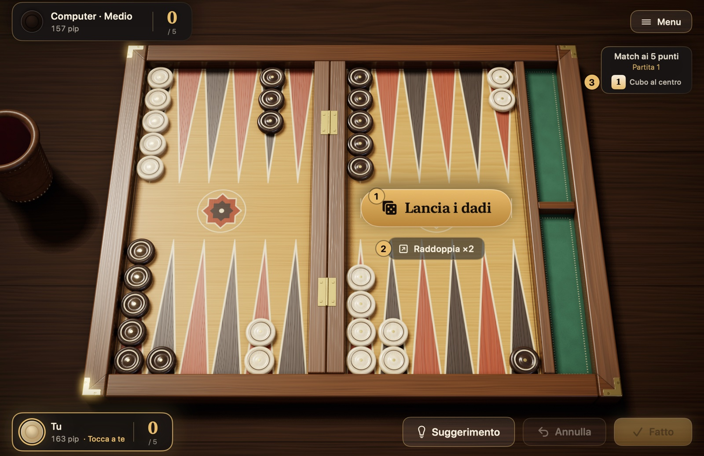
Figura 5.2Il momento di lanciare. 1 il pulsante «Lancia i dadi», 2 il pulsante «Raddoppia» (solo con le regole internazionali), 3 l’indicatore del cubo.
Dopo il lancio, le pedine che puoi muovere si illuminano. Puoi muovere una pedina in uno di questi modi:
Con i clic: fai clic prima sulla pedina; le punte dove può andare sono cerchiate di verde. Poi fai clic sulla destinazione. Una destinazione dove colpiresti una pedina scoperta dell’avversario è segnata con un mirino rosso.
Trascinando: prendi la pedina e rilasciala sulla destinazione.
Veloce: un doppio clic gioca la pedina con il dado più alto, un clic destro con il dado più basso.
Da tastiera: Tab passa da una pedina muovibile all’altra, i tasti freccia scelgono la destinazione, Invio muove.
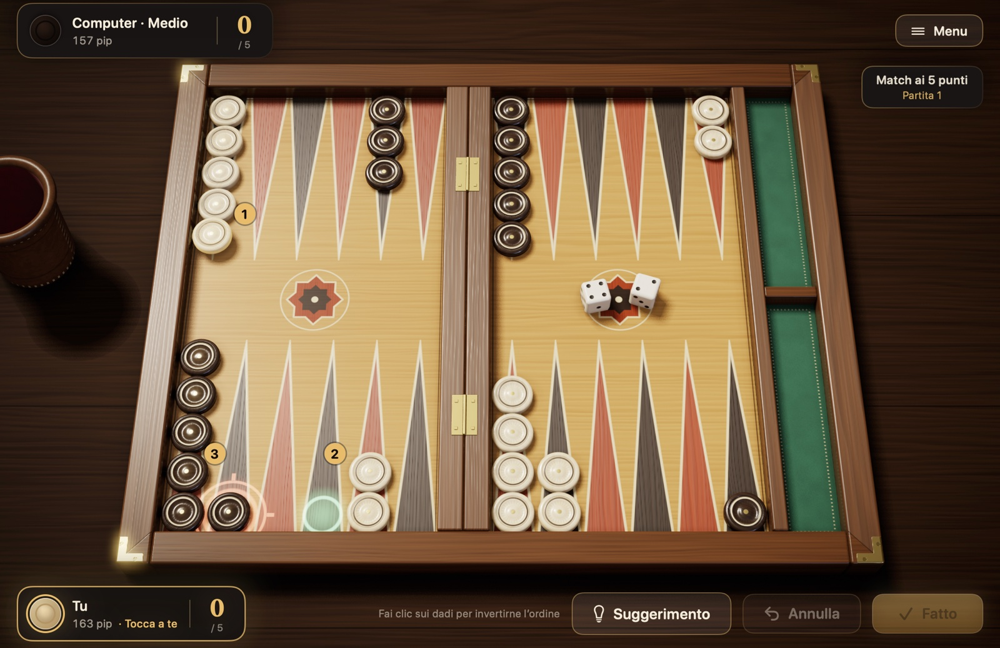
Figura 5.3Mossa. È uscito 4-2 ed è selezionata la pedina sulla 13. 1 la pedina selezionata, 2 la punta vuota dove può andare con il 4 (cerchio verde), 3 la punta dove con il 2 può colpire la pedina scoperta dell’avversario (mirino rosso).
Per cambiare il dado da giocare per primo, fai clic sui dadi sul tavoliere. Quando hai finito il turno premi «Fatto» (Invio); fino a quel momento «Annulla» (⌘Z) annulla i passi giocati uno alla volta. Se non hai nessuna mossa, l’app mostra «Nessuna mossa possibile!» e il turno passa all’avversario. Se hai una pedina sulla barra e la tavola interna dell’avversario è tutta chiusa, i dadi non vengono nemmeno lanciati: sullo schermo compare «Chiuso fuori» e il turno passa direttamente all’avversario.
5.3 Suggerimenti e aiuti di gioco
Il pulsante «Suggerimento» (⌘I) segna sul tavoliere la mossa che il motore Maestro consiglia per quel turno; il segno sparisce quando giochi il tuo primo passo. Con le regole internazionali dà consigli anche sulle decisioni sul cubo: prima di lanciare, «Suggerimento: raddoppiare» o «Suggerimento: non raddoppiare, lanciare»; contro un raddoppio del computer, «Suggerimento: accettare» o «Suggerimento: rifiutare». I suggerimenti che usi vengono registrati nel riepilogo di fine partita e nelle statistiche.
Nella sezione «Gioco» delle Impostazioni ci sono opzioni che semplificano il turno:
Lancia automaticamente: quando tocca a te, i dadi vengono lanciati da soli. Nei turni in cui puoi raddoppiare aspetta: la decisione sul cubo è tua.
Conferma automatica delle mosse: il turno finisce da solo con l’ultimo passo. Se è disattivata premi «Fatto», e fino a quel momento puoi annullare.
Gioca automaticamente le mosse obbligate: se c’è una sola mossa legale, l’app la gioca e il turno finisce.
Evidenzia le pedine che puoi muovere e Cerchia le destinazioni: attivano e disattivano le pedine illuminate e i cerchi verdi. Con i cerchi disattivati, il cerchio compare solo sulla destinazione scelta con la tastiera.
Mostra il pulsante Suggerimento e Mostra il pulsante Annulla: se sono disattivati, non si possono chiedere suggerimenti o non si possono annullare i passi giocati. Puoi usarli per metterti alla prova.
5.4 Raddoppiare e rispondere a un’offerta
Il raddoppio si gioca solo con le regole internazionali. Quando tocca a te e il cubo è al centro o è tuo, prima di lanciare premi il pulsante «Raddoppia» (⌘D). Sul pulsante è scritto il valore a cui sale il cubo, per esempio «Raddoppia ×2». Il computer risponde subito: se accetta, il cubo passa a lui e la partita continua; se rifiuta, vinci la partita.
Quando è il computer a raddoppiare, compare una scheda:
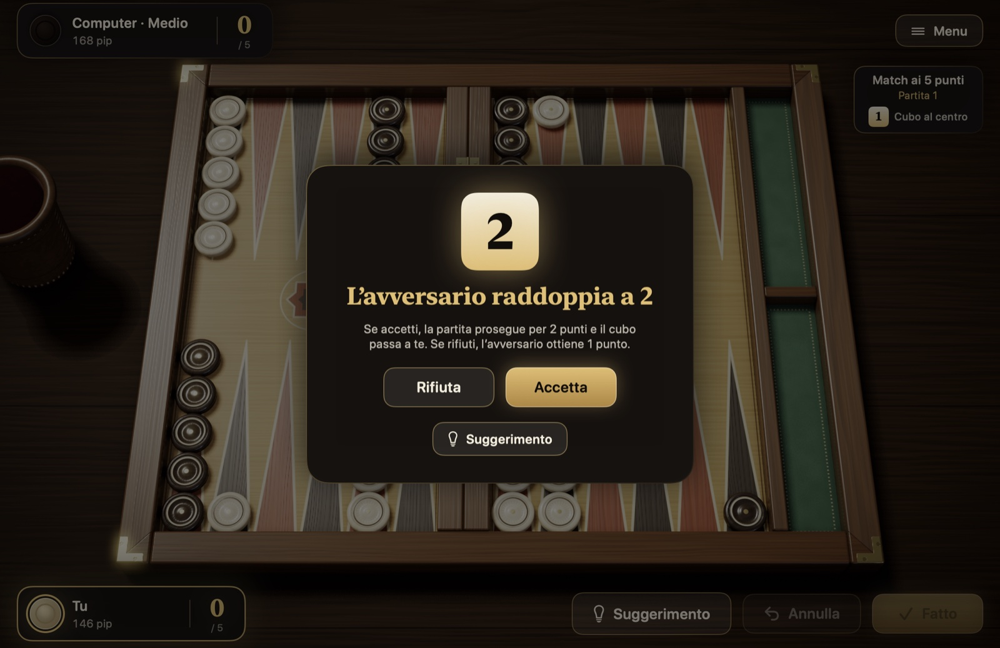
Figura 5.4La scheda dell’offerta di raddoppio.
Accetta: la partita continua al doppio del valore e il cubo passa a te.
Rifiuta: abbandoni la partita; l’avversario prende tanti punti quanto valeva il cubo prima dell’offerta.
Beaver: compare in una sessione, se «Beaver» è attivo. Accetti il raddoppio e raddoppi subito il cubo ancora una volta, e il cubo resta a te.
Suggerimento: mostra il consiglio del motore Maestro per la tua decisione.
Quando raddoppi tu, se il computer fa beaver compare una scheda simile: accetti, rifiuti oppure, se «Raccoon» è attivo, raddoppi il cubo ancora una volta.
Il valore del cubo e chi lo possiede sono indicati sotto le informazioni sul match, in alto a destra: «Cubo al centro», «Cubo a te» o «Cubo all’avversario». In un match, nella prima partita giocata quando uno dei due è a 1 punto dall’obiettivo il cubo non si usa, e lì compare «Partita Crawford».
5.5 Abbandonare e terminare una sessione
Durante la partita, scegli «Abbandona» dal menu Partita o dalla scheda di pausa. Nella scheda sei tu a proporre con quanti punti abbandonare: semplice, gammon oppure, con le regole internazionali, backgammon. Sotto ogni opzione è indicato in anticipo se l’avversario accetterà o no. L’avversario rifiuta un’offerta inferiore a quanto promette la posizione, e la partita continua; si tiene conto anche del punteggio del match e del cubo. I livelli impossibili non compaiono nella scheda: se hai cominciato a portare fuori le pedine, gammon e backgammon non sono più possibili, e in un match non viene proposto un livello più alto di quello che darebbe già la vittoria del match all’avversario.
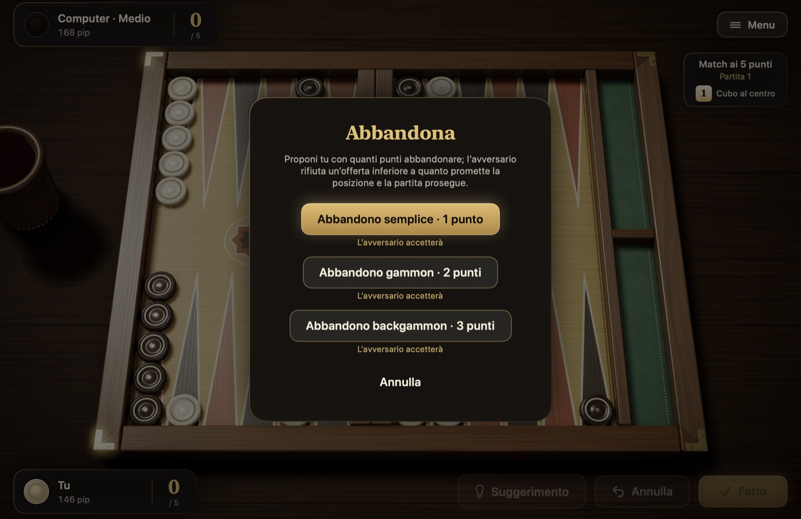
Figura 5.5La scheda «Abbandona».
Anche il computer può abbandonare di sua iniziativa, in una corsa senza speranza.
La sessione si sceglie solo con le regole internazionali; nel tavla turco non c’è. Una sessione non ha una lunghezza del match: sei tu a terminarla con «Termina sessione». Se la termini tra una partita e l’altra, dalla scheda di fine partita, la sessione finisce subito. Se vuoi terminarla durante una partita, abbandoni la partita in corso; se l’avversario accetta, i punti della partita vengono segnati e la sessione finisce. Il risultato della sessione va nell’archivio e nelle statistiche.
5.6 Mettere in pausa e riprendere un match più tardi
Il pulsante «Menu» in alto a destra, o il tasto Esc, mette in pausa la partita; premendo di nuovo Esc la partita riprende. Nella scheda di pausa ci sono «Riprendi», «Impostazioni», «Come si gioca», «Cronologia delle mosse», «Match», «Abbandona» ed «Esci dal match».
I match vengono salvati automaticamente. Con «Esci dal match» puoi tornare al menu principale e chiudere l’app; «Continua» nel menu principale riapre l’ultimo match dal punto in cui l’avevi lasciato. Se hai più match, la scheda «Match» elenca i match in corso e l’archivio di quelli conclusi. Torni a un match in corso con «Riprendi», elimini quello che non vuoi con «Elimina» e rivedi un match concluso con «Rivedi». In ogni riga sono indicati anche il set di regole del match e le regole facoltative attive.
5.7 Fine partita, analisi e statistiche
Quando la partita finisce, una scheda mostra il risultato: i punti vinti, il motivo del gammon o del backgammon, il punteggio del match e il riepilogo della partita. Nel riepilogo ci sono la durata, la media dei tiri di entrambi i giocatori, la fortuna ai dadi e i suggerimenti che hai usato. Quando il match finisce, il pulsante «Nuovo match» della scheda avvia un nuovo match con le tue ultime scelte, senza aprire il pannello; sotto il pulsante c’è il riepilogo del match che sta per iniziare.
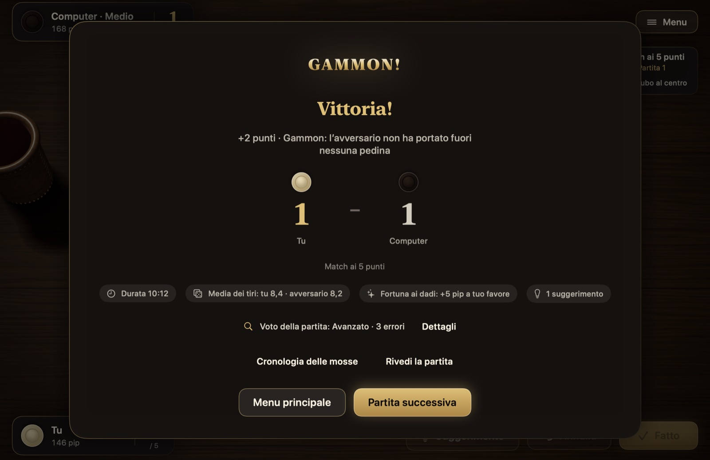
Figura 5.6La scheda di fine partita.
Il «Voto della partita», al centro della scheda, nasce dall’esame delle tue decisioni fatto dal motore Maestro; accanto ci sono un valore PR approssimativo e il numero di errori. «Dettagli» apre la scheda dell’analisi: le decisioni che ti sono costate più di 0,02 punti rispetto all’opzione migliore sono elencate affiancando la tua giocata a quella migliore. Sono comprese anche le decisioni sul cubo. Quando il match finisce, viene dato anche il voto del match.
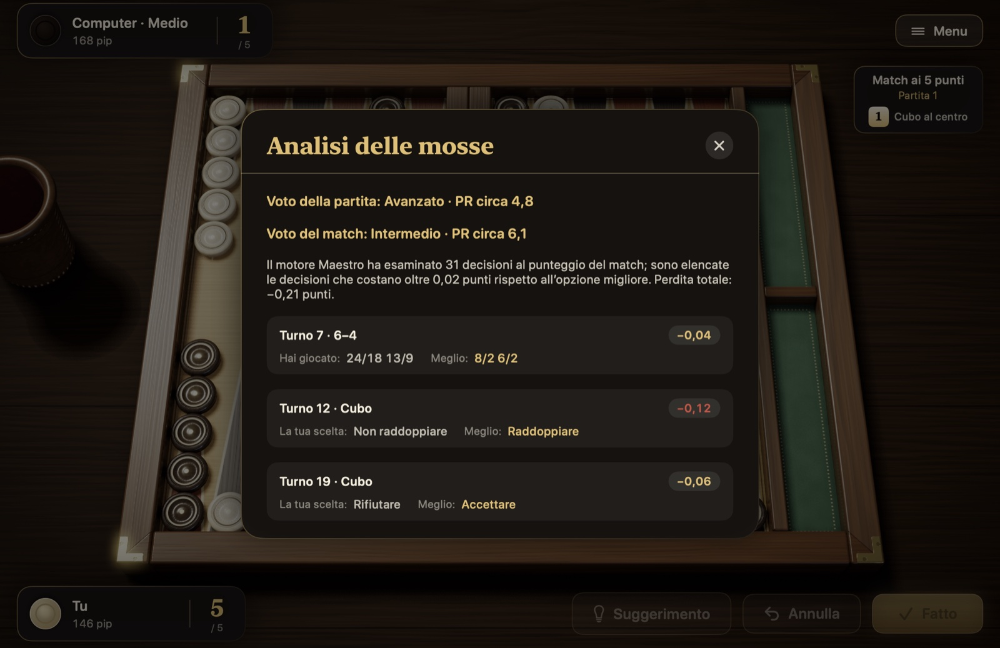
Figura 5.7Analisi delle mosse.
Con i pulsanti in fondo alla scheda di fine partita apri la cronologia delle mosse, rivedi la partita, torni al menu principale o passi alla partita successiva.
La scheda «Statistiche» del menu principale mostra quanti match e quante partite hai vinto e giocato, la percentuale di vittorie, i gammon vinti e subiti, la tua serie di vittorie più lunga, i risultati per livello, la distribuzione dei dadi e gli ultimi match. Le sessioni giocate e i punti netti nelle sessioni sono conteggiati a parte. Con «Azzera le statistiche» ricominci da zero.
5.8 Cronologia delle mosse, replay ed esportazione
La «Cronologia delle mosse» (⌘L) elenca tutti i turni di entrambi i giocatori, insieme agli eventi del cubo e agli abbandoni. Se il match ha più partite, la partita si sceglie con i pulsanti in alto.
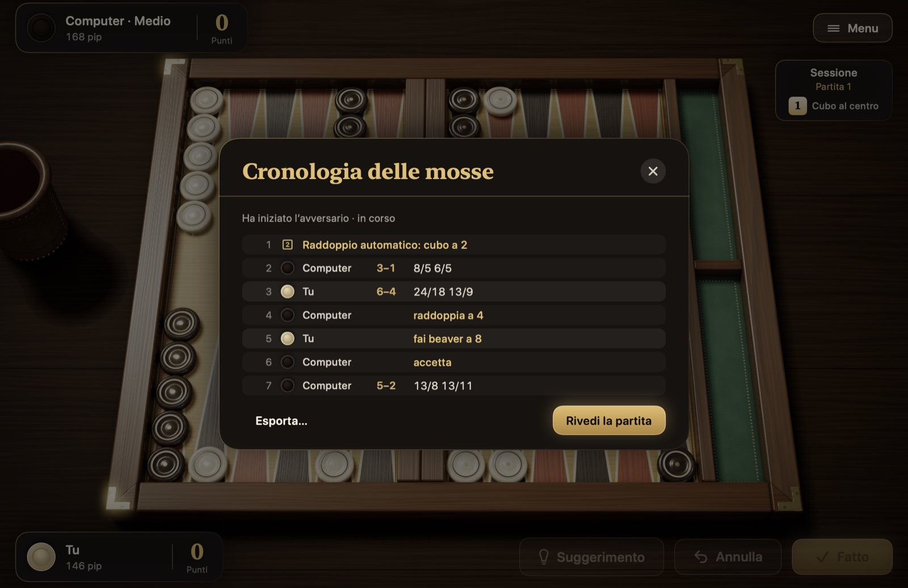
Figura 5.8Cronologia delle mosse. La cronologia di una sessione: raddoppio automatico, turni con i relativi dadi, raddoppio, beaver e accettazione.
Una partita conclusa si può rivedere dall’inizio con «Rivedi la partita», con le animazioni reali: ← e → scorrono i turni, Spazio avvia e mette in pausa. «Esporta…» salva il registro del match in tre formati: testo leggibile (.txt), il formato .mat letto da Jellyfish e XG e il formato .sgf di GNU Backgammon. Così puoi analizzare il match anche con questi programmi.
5.9 Impostazioni
Alle Impostazioni si arriva dal menu principale o dalla scheda di pausa. Le modifiche si applicano subito.
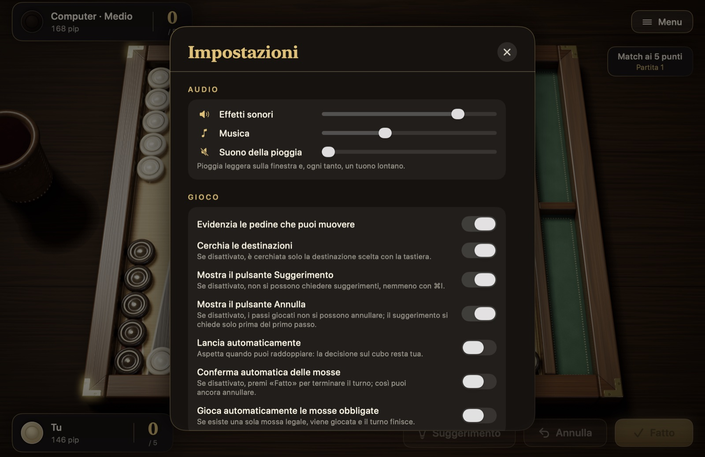
Figura 5.9Impostazioni.
Audio: livelli separati per gli effetti sonori, la musica e il suono della pioggia sulla finestra.
Gioco: pedine muovibili, cerchi sulle destinazioni, pulsanti Suggerimento e Annulla, lancio automatico, conferma automatica e mosse obbligate; i dettagli nella sezione 5.3. Le regole non sono nelle Impostazioni: le due regole tradizionali del tavla turco si scelgono nel pannello Nuovo match.
Velocità: velocità delle animazioni e tempo di riflessione dell’avversario. Con «Bussolotto» disattivato i dadi si lanciano senza bussolotto e il lancio è più rapido.
Aspetto: tavoliere («Noce classico», «Intarsio di madreperla», «Acero»), pedine («Bosso ed ebano», «Marmo e onice», «Lacca rossa e nera»), dadi («Avorio», «Ebano», «Ambra») e panno («Verde», «Bordeaux», «Blu navy»). Lo stile delle pedine e dei dadi cambia anche il suono; anche le icone delle pedine sullo schermo prendono i colori dello stile di pedine scelto. «Tavola interna a sinistra» specchia il tavoliere e le pedine escono verso sinistra. La dimensione del testo può essere «Normale», «Grande» o «Molto grande».
Telecamera: telecamera cinematografica (avvicinamento all’inizio del match, orbita discendente alla fine), zoom e inclinazione della telecamera.
Lingua: turco, inglese, francese, tedesco, spagnolo, portoghese e italiano. Con «Sistema» selezionato si usa la lingua del sistema.
5.10 Scorciatoie da tastiera
Tutte le mosse sul tavoliere si possono giocare da tastiera, senza usare il mouse.
Tabella 5.1 Scorciatoie da tastiera
Tasto
Che cosa fa
Spazio
Lancia i dadi; a turno finito, conferma il turno
Invio
Conferma il turno; muove la pedina sulla destinazione scelta con la tastiera
Tab, ⇧Tab
Passa da una pedina muovibile all’altra
Tasti freccia
Passano da una destinazione all’altra della pedina selezionata
Esc
Mette in pausa; premuto di nuovo, fa riprendere la partita; chiude una scheda aperta
⌘Z
Annulla l’ultimo passo
⌘I
Suggerimento
⌘D
Raddoppia
⌘L
Apre la cronologia delle mosse
⌘N
Nuovo match; se un match è in corso, anche tra una partita e l’altra, prima chiede conferma
⌘?
Apre la scheda «Come si gioca»
← →
Nel replay, turno precedente e successivo
5.11 Accessibilità
Lettore di schermo: con VoiceOver puoi giocare sul tavoliere. Punte, barra, pedine uscite e dadi sono elementi separati; per ognuno VoiceOver legge di chi sono le pedine e quante sono, e se l’elemento è muovibile, selezionato o una destinazione. I tuoi dadi, le mosse dell’avversario e le pedine colpite vengono annunciati a voce.
Riduzione del movimento: se in macOS è attivo «Riduci movimento», si disattivano le animazioni della telecamera, l’oscillazione e la parallasse del menu, il bussolotto, i rimbalzi delle pedine e la pioggia d’oro.
Contrasto: se in macOS è attiva l’impostazione «Aumenta contrasto», i testi e le linee dell’interfaccia vengono disegnati in modo più marcato.
Dimensione del testo: nelle Impostazioni puoi impostare il testo su «Grande» o «Molto grande»; le schede e gli indicatori si ingrandiscono di conseguenza.
Tastiera: tutte le mosse sul tavoliere si possono giocare da tastiera; i tasti sono nella Tabella 5.1.
Capitolo 6
Consultazione
Questo capitolo è pensato per la consultazione: domande frequenti, glossario e indice. La colonna «Vedi» della tabella dei termini rimanda alle sezioni in cui ogni termine è spiegato.
6.1 Domande frequenti
Mi sono usciti dei dadi pessimi: posso passare il turno? No. Se i dadi permettono una mossa, sei obbligato a farla. Il turno passa da solo soltanto quando nessun dado si può giocare.
Posso muovere le pedine dell’avversario? No. Ogni giocatore muove solo le proprie pedine.
Dopo aver colpito una pedina, posso proseguire con la stessa pedina? Con la regola internazionale sì: colpire non conclude il viaggio della pedina, e puoi farla avanzare con il dado che resta. Nel tavla turco più diffuso, invece, è vietato colpire e fuggire nella propria tavola interna. In Pedine e Dadi, quando giochi con le regole turche, questo divieto si applica se nel nuovo match hai scelto «No colpisci e fuggi»; per impostazione predefinita è disattivato.
Quante pedine si possono mettere al massimo su una punta? Non c’è limite. Sulle tue punte puoi ammucchiare quante pedine vuoi.
Posso cominciare a portare fuori le pedine se ho una pedina colpita? No. Per l’uscita tutte le tue pedine devono essere nella tua tavola interna; una pedina sulla barra conta come fuori dalla tavola interna.
Devo per forza sommare i due dadi e giocarli con una sola pedina? No. Puoi anche dare i due dadi a due pedine diverse. Se li giochi con una sola pedina, la tappa intermedia deve essere libera.
La partita può finire in parità? No. Poiché si gioca a turno, qualcuno finisce sempre per primo.
Ho dovuto rompere un punto nella mia tavola interna: è un errore? Non sempre. A volte i dadi non lasciano altra scelta; la regola della mossa obbligata viene prima di tutto.
In Pedine e Dadi ho mosso una pedina per sbaglio: che cosa devo fare? Finché non premi Fatto, con Annulla puoi annullare le mosse di quel turno. Se nelle Impostazioni è attiva «Conferma automatica delle mosse», il turno finisce con l’ultimo passo e non si può più annullare.
Perché il mio conteggio dei pip è salito all’improvviso? Ti hanno colpito una pedina. La pedina che va sulla barra torna all’inizio del percorso, quindi il tuo conteggio dei pip aumenta della distanza che quella pedina ha perso.
6.2 Glossario e indice
Tabella 6.1 Glossario e indice
Termine
Significato
Vedi
Ancora
Punto di due o più pedine tenuto nella tavola interna dell’avversario
Se sei arrivato fin qui, conosci tutte le regole del backgammon, i piani fondamentali e ogni angolo di Pedine e Dadi. Il resto si impara al tavoliere. Gioca i tuoi primi match al livello «Facile»; dai un’occhiata all’analisi delle partite perse per vedere quali decisioni ti sono costate punti, poi alza il livello. I dadi a volte sorridono a te, a volte all’avversario; nel lungo periodo, a fare la differenza sono le tue scelte.
Da cinquemila anni il backgammon fa sedere le persone ai due lati di un tavolo. Mi auguro che Pedine e Dadi sia un piccolo contributo a questa tradizione e che ti regali ore piacevoli. Le tue opinioni e i tuoi suggerimenti aiutano a migliorare l’app.